Power Analysis in R
Martin Schweinberger
2022-09-13

Introduction
This tutorial introduces power analysis using R. Power analysis is a method primarily used to determine the appropriate sample size for empirical studies.

This tutorial is aimed at intermediate and advanced users of R with the aim of showcasing how to perform power analyses for basic inferential tests using the pwr package (Champely 2020) and for mixed-effect models (generated with the lme4 package) using the simr package (Green and MacLeod 2016a) in R. The aim is not to provide a fully-fledged analysis but rather to show and exemplify a handy method for estimating the power of experimental and observational designs and how to implement this in R.
A list of very recommendable papers discussing research on effect sizes and power analyses on linguistic data can be found here. Here are some main findings coming from these papers as stated in Brysbaert and Stevens (2018) and on the http://crr.ugent.be website:
In experimental psychology we can do replicable research with 20 participants or less if we have multiple observations per participant per condition, because we can turn rather small differences between conditions into effect sizes of d > .8 by averaging across observations.
The more sobering finding is that the required number of observations is higher than the numbers currently used (which is why we run underpowered studies). The ballpark figure we propose for RT experiments with repeated measures is 1600 observations per condition (e.g., 40 participants and 40 stimuli per condition).
The 1600 observations we propose is when you start a new line of research and don’t know what to expect.
Standardized effect sizes in analyses over participants (e.g., Cohen’s d) depend on the number of stimuli that were presented. Hence, you must include the same number of observations per condition if you want to replicate the results. The fact that the effect size depends on the number of stimuli also has implications for meta-analyses.
The entire R Notebook for the tutorial can be downloaded here. If you want to render the R Notebook on your machine, i.e. knitting the document to html or a pdf, you need to make sure that you have R and RStudio installed and you also need to download the bibliography file and store it in the same folder where you store the Rmd file.
The basis for the present tutorial is Green and MacLeod (2016b) (which you can find here). Green and MacLeod (2016b) is a highly recommendable and thorough tutorial on performing power analysis in R. Recommendable literature on this topic are, e.g. Arnold et al. (2011) and Johnson et al. (2015) and this tutorial.
What determines if you find an effect?
To explore this issue, let us have a look at some distributions of samples with varying features sampled from either one or two distributions.
Let us start with the distribution of two samples (N = 30) sampled from the same population.
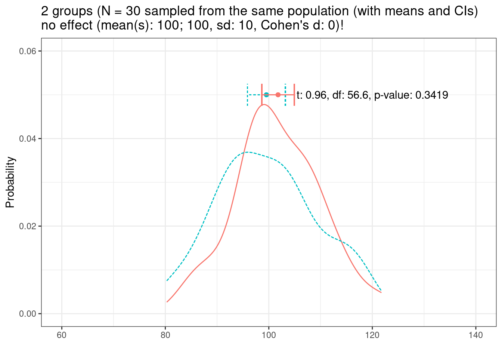
The means of the samples are very similar and a t-test confirms that we can assume that the samples are drawn from the same population (as the p-value is greater than .05).
Let us now draw another two samples (N = 30) but from different populations where the effect of group is weak (the population difference is small).
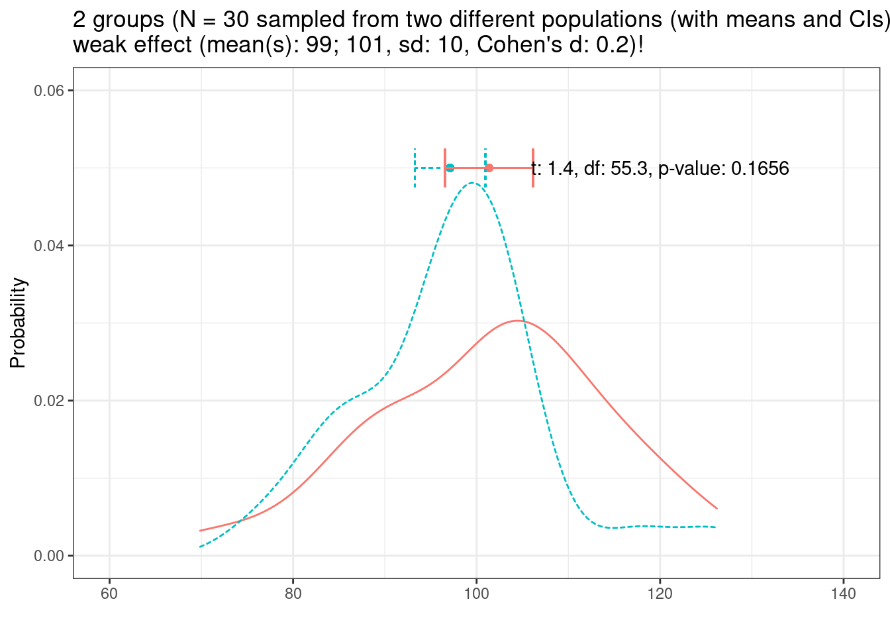
Let us briefly check if the effect size, Cohen’s d of 0.2, is correct (for this, we increase the sample size dramatically to get very accurate estimates). If the above effect size is correct (Cohen’s d = 0.2), then the reported effect size should be 0.2 (or -0.2). This is so because Cohen’s d represents distances between group means measured in standard deviations (in our example, the standard deviation is 10 and the difference between the means is 2, i.e., 20 percent of a standard deviation; which is equal to a Cohen’s d value of 0.2). Let’s check the effect size now (we will only do this for this distribution but you can easily check for yourself that the effect sizes provided in the plot headers below are correct by adapting the code chunk below and using the numbers provided in the plot headers).
# generate two vectors with numbers using the means and sd from above
# means = 101, 99, sd = 10
num1 <- rnorm(1000000, mean = 101, sd = 10)
num2 <- rnorm(1000000, mean = 99, sd = 10)
# perform t-test
tt <- t.test(num1, num2, alternative = "two.sided")
# extract effect size
effectsize::effectsize(tt)## Cohen's d | 95% CI
## ------------------
## 0.20 |
##
## - Estimated using un-pooled SD.Based on the t-test results in the distribution plot, we assume that the data represents two samples from the same population (which is false) because the p-value is higher than .05. This means that the sample size is insufficient or does not enough power to show that they are actually from two different populations given the variability in the data nd the size of the effect (which is weak).
What happens if we increase the effect size to medium? This means that we again draw two samples from two different populations but the difference between the populations is a bit larger (group has a medium effect, Cohen’s d = .5)
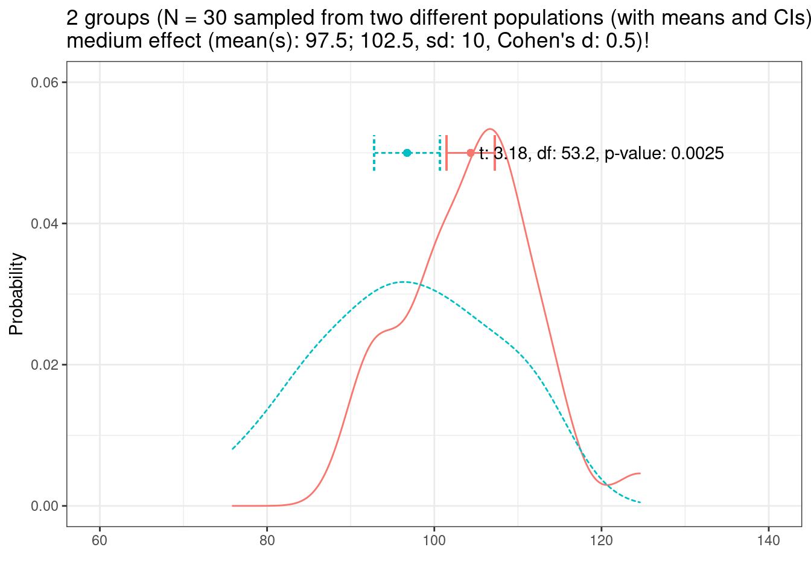
Now, lets have a look at at the distribution of two different groups (group has a strong effect, Cohen’s d = .8)
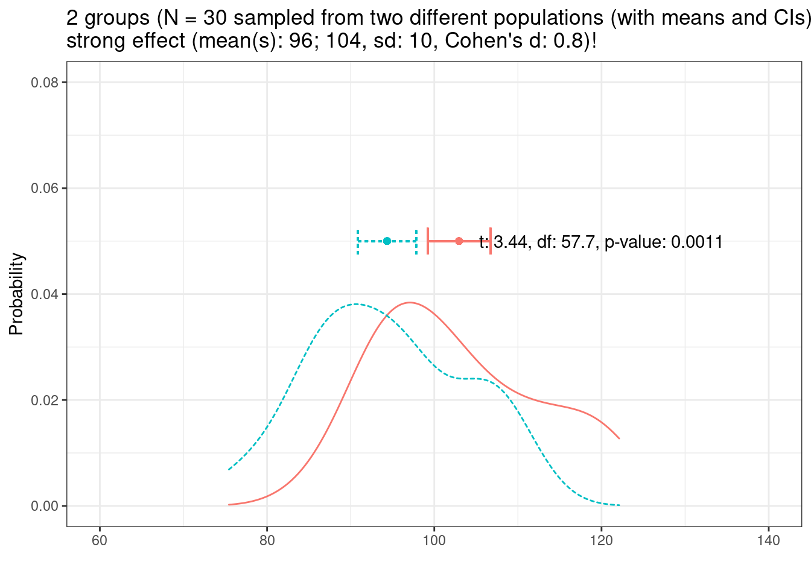
Now, lets have a look at at the distribution of two different groups (group has a very strong effect, Cohen’s d = 1.2)
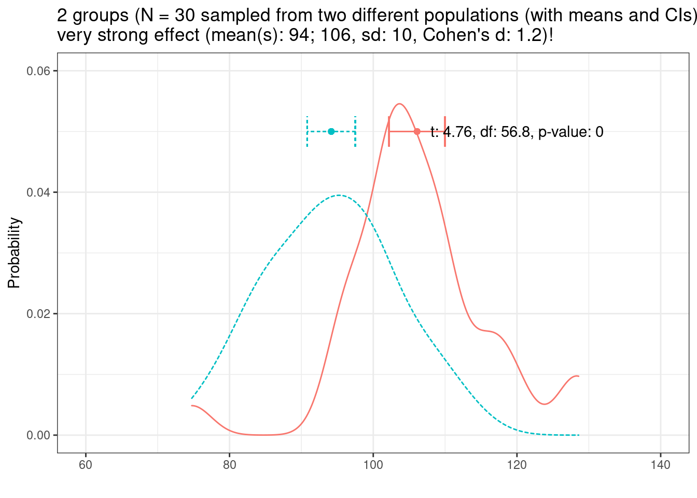
If variability and sample size remain constant, larger effects are easier to detect than smaller effects!
Sample size
And let’s now look at sample size.
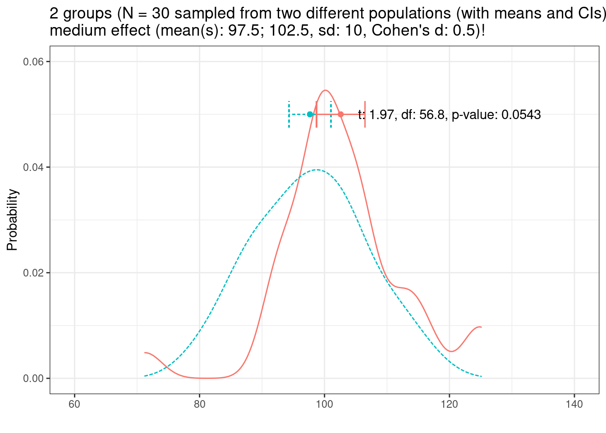
Let us now increase the sample size to N = 50.
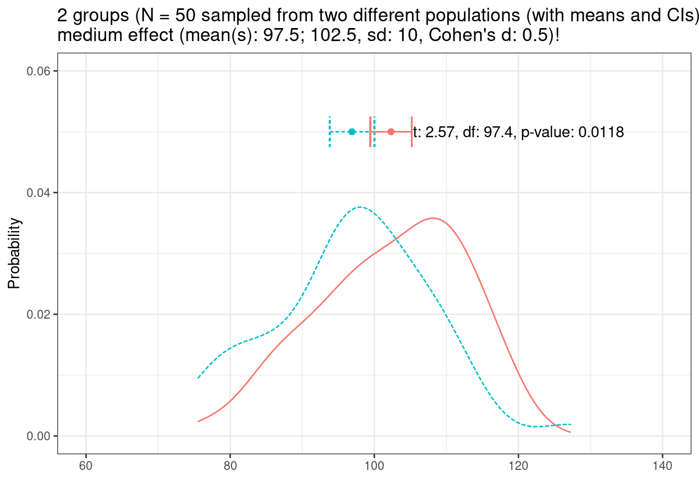
If variability and effect size remain constant, effects are easier to detect with increasing sample size!
Variability
And let’s now look at variability.
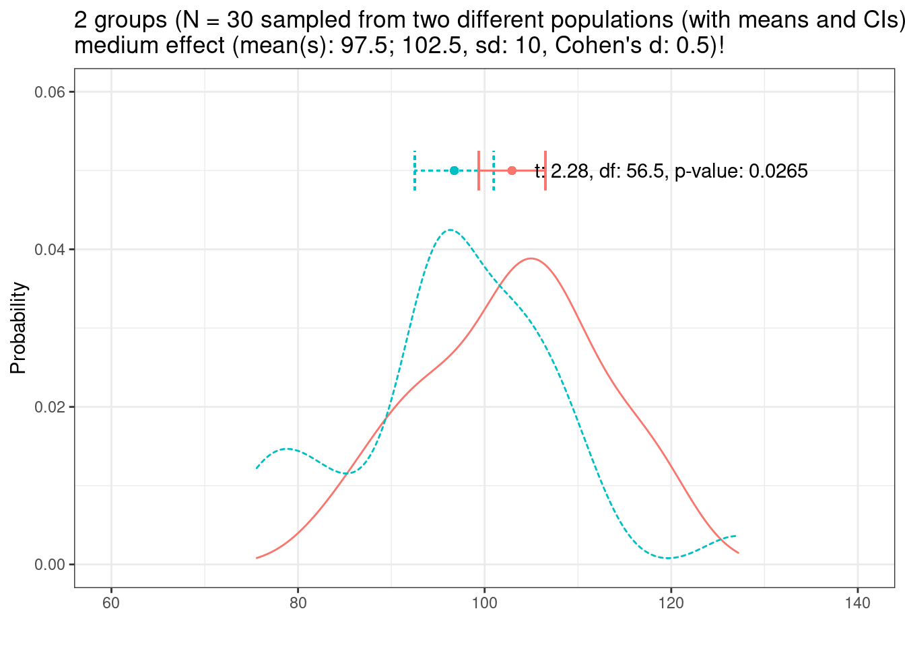
Let’s decrease the variability to sd = 5.
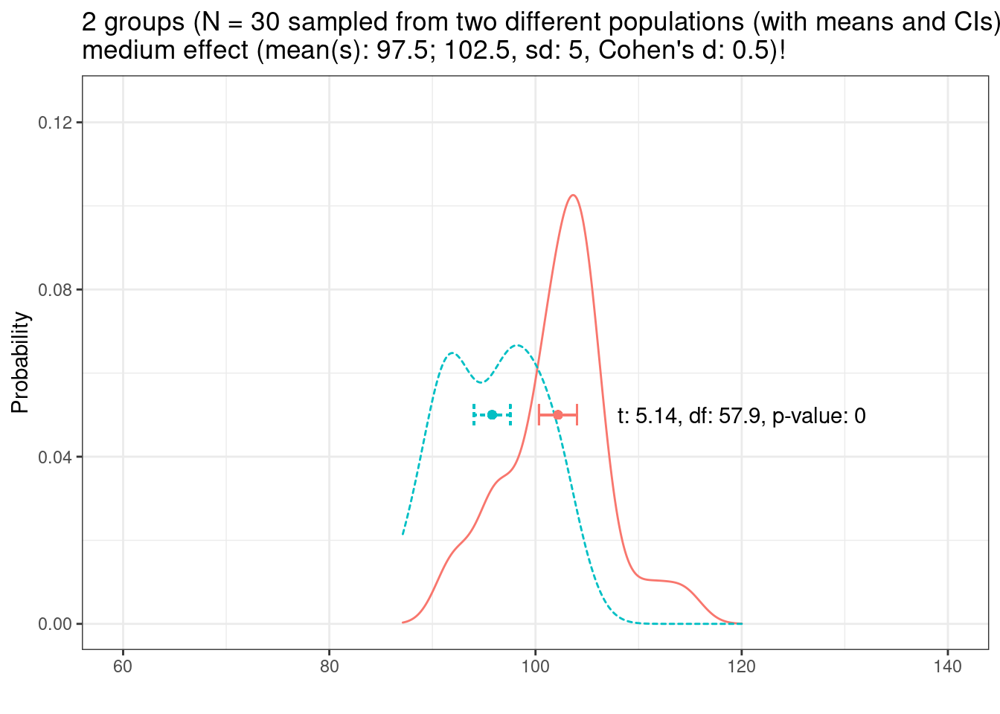
If the sample and effect size remain constant, effects are easier to detect with decreasing variability!
In summary, there are three main factors that determine if a model finds an effect. The accuracy (i.e., the probability of finding an effect):
- the size of the effect (bigger effects are easier to detect)
- the variability of the effect (less variability makes it easier to detect an effect), and
- the sample size (the bigger the sample size, the easier it is to detect an effect);
- number of subjects/participants
- number of items/questions
- number of observations per item within subjects/participants
Now, if a) we dealing with a very big effect, then we need only few participants and few items to accurately find this effect.
Or b) if we dealing with an effect that has low variability (it is observable for all subjects with the same strength), then we need only few participants and few items to accurately find this effect.
Before we conduct a study, we should figure out, what sample we need to detect a small/medium effect with medium variability so that our model is sufficient to detect this kind of effect. In order to do this, we would generate a data set that mirrors the kind of data that we expect to get (with the properties that we expect to get). We can then fit a model to this data and check if a model would be able to detect the expected effect. However, because a single model does not tell us that much (it could simply be luck that it happened to find the effect), we run many different models on variations of the data and see how many of them find the effect. As a general rule of thumb, we want a data set that allows a model to find a medium sized effect with at least an accuracy of 80 percent (Field et al. 2007).
In the following, we will go through how to determine what sample size we need for an example analysis.
Preparation and session set up
This tutorial is based on R. If you have not installed R or are new to it, you will find an introduction to and more information how to use R here. For this tutorials, we need to install certain packages into the R library on your computer so that the scripts shown below are executed without errors. Before turning to the code below, please install the packages by running the code below this paragraph. If you have already installed the packages mentioned below, then you can skip ahead and ignore this section. To install the necessary packages, simply run the following code - it may take some time (between 1 and 5 minutes to install all of the libraries so you do not need to worry if it takes some time).
# install libraries
install.packages(c("tidyverse", "pwr", "lme4", "sjPlot", "simr", "effectsize"))
install.packages(c("DT", "knitr", "flextable"))
install.packages("DescTools")
install.packages("pacman")
# install klippy for copy-to-clipboard button in code chunks
install.packages("remotes")
remotes::install_github("rlesur/klippy")Now that we have installed the packages, we can activate them as shown below.
# set options
options(stringsAsFactors = F) # no automatic conversion of factors
options("scipen" = 100, "digits" = 4) # suppress math annotation
options(max.print=1000) # print max 1000 results
# load packages
library(tidyverse)
library(pwr)
library(lme4)
library(sjPlot)
library(simr)
library(effectsize)
library(DT)
library(knitr)
library(flextable)
pacman::p_load_gh("trinker/entity")
# activate klippy for copy-to-clipboard button
klippy::klippy()Once you have installed R and RStudio and initiated the session by executing the code shown above, you are good to go.
Basic Power Analysis
Let’s start with a simple power analysis to see how power analyses work for simpler or basic statistical tests such as t-test, \(\chi\)2-test, or linear regression.
The pwr package (Champely 2020) implements power analysis as outlined by Cohen (1988) and allows to perform power analyses for the following tests (selection):
balanced one way ANOVA (
pwr.anova.test)chi-square test (
pwr.chisq.test)Correlation (
pwr.r.test)general linear model (
pwr.f2.test)paired (one and two sample) t-test (
pwr.t.test)two sample t-test with unequal N (
pwr.t2n.test)
For each of these functions, you enter three of the four parameters (effect size, sample size, significance level, power) and the fourth is calculated.
So how does this work? Have a look at the code chunk below.
One-way ANOVA
Let check how to calculate the necessary sample size for each group for a one-way ANOVA that compares 5 groups (k) and that has a power of 0.80 (80 percent), when the effect size is moderate (f = 0.25) and the significance level is 0.05 (5 percent)..
# load package
library(pwr)
# calculate minimal sample size
pwr.anova.test(k=5, # 5 groups are compared
f=.25, # moderate effect size
sig.level=.05, # alpha/sig. level = .05
power=.8) # confint./power = .8##
## Balanced one-way analysis of variance power calculation
##
## k = 5
## n = 39.15
## f = 0.25
## sig.level = 0.05
## power = 0.8
##
## NOTE: n is number in each groupIn this case, the minimum number of participants in each group would be 40.
Let’s check how we could calculate the power if we had already collected data (with 30 participants in each group) and we want to report the power of our analysis (and let us assume that the effect size was medium).
# calculate minimal sample size
pwr.anova.test(k=5, # 5 groups are compared
f=.25, # moderate effect size
sig.level=.05, # alpha/sig. level = .05
n=30) # n of participants##
## Balanced one-way analysis of variance power calculation
##
## k = 5
## n = 30
## f = 0.25
## sig.level = 0.05
## power = 0.6676
##
## NOTE: n is number in each groupIn this case our analysis would only have a power or 66.8 percent. This means that we would only detect a medium sized effect in 66.7 percent of cases (which is considered insufficient).
Power Analysis for GLMs
When determining the power of a generalized linear model, we need to provide
the degrees of freedom for numerator (´u´)
the degrees of freedom for denominator (
v)the effect size (the estimate of the intercept and the slope/estimates of the predictors)
the level of significance (i.e., the type I error probability)
The values of the parameters in the example below are adapted from the fixed-effects regression example that was used to analyze different teaching styles (see here).
The effect size used here is \(f^2^\) that has be categorized as follows (see Cohen 1988): small \(≥\) 0.02, medium \(≥\) 0.15, and large \(≥\) 0.35. So in order to determine if the data is sufficient to find a weak effect when comparing 2 groups with 30 participants in both groups (df_numerator_: 2-1; df_denominator_: (30-1) + (30-1)) and a significance level at \(\alpha\) = .05, we can use the following code.
# general linear model
pwrglm <- pwr.f2.test(u = 1,
v = 58,
f2 = .02,
sig.level = 0.05)
# inspect results
pwrglm##
## Multiple regression power calculation
##
## u = 1
## v = 58
## f2 = 0.02
## sig.level = 0.05
## power = 0.1899The results show that the regression analyses used to evaluate the effectiveness of different teaching styles only had a power of 0.1899.
Power Analysis for t-tests
For t-tests (both paired and 2-sample t-tests), the effect size measure is Cohen’s \(d\) that has be categorized as follows (see Cohen 1988): small \(≥\) 0.2, medium \(≥\) 0.5, and large \(≥\) 0.8.
Paired t-test
So in order to determine if the data is sufficient to find a weak effect when comparing the pre- and post-test results of a group with 30 participants, evaluating an undirected hypothesis (thus the two-tailed approach), and a significance level at \(\alpha\) = .05, we can use the following code.
# paired t-test
pwrpt <- pwr.t.test(d=0.2,
n=30,
sig.level=0.05,
type="paired",
alternative="two.sided")
# inspect
pwrpt##
## Paired t test power calculation
##
## n = 30
## d = 0.2
## sig.level = 0.05
## power = 0.1852
## alternative = two.sided
##
## NOTE: n is number of *pairs*Given the data, a weak effect in this design can only be detected with a certainty of 0.1852 percent. This means that we would need to substantively increase the sample size to detect a small effect with this design.
Two-sample (independent) t-test
The power in a similar scenario but with two different groups (with 25 and 35 subjects) can be determined as follows (in this case we test a directed hypothesis that checks if the intervention leads to an increase in the outcome - hence the greater in the alternative argument):
# independent t-test
pwr2t <- pwr.t2n.test(d=0.2,
n1=35,
n2 = 25,
sig.level=0.05,
alternative="greater")
# inspect
pwr2t##
## t test power calculation
##
## n1 = 35
## n2 = 25
## d = 0.2
## sig.level = 0.05
## power = 0.1867
## alternative = greaterGiven the data, a weak effect in this design can only be detected with a certainty of 0.1867 percent. This means that we would need to substantively increase the sample size to detect a small effect with this design.
Power Analysis for \(\chi\)2-tests
Let us now check the power of a \(\chi^2\)^-test. For \(\chi^2\)^-test, the effect size measure used in the power analysis is \(w\) that has be categorized as follows (see Cohen 1988): small \(≥\) 0.1, medium \(≥\) 0.3, and large \(≥\) 0.5. Also, keep in mind that for \(\chi^2\)^-tests, at least 80 percent of cells need to have values \(≥\) 5 and none of the cells should have expected values smaller than 1 (see Bortz, Lienert, and Boehnke 1990).
# x2-test
pwrx2 <- pwr.chisq.test(w=0.2,
N = 25, # total number of observations
df = 1,
sig.level=0.05)
# inspect
pwrx2##
## Chi squared power calculation
##
## w = 0.2
## N = 25
## df = 1
## sig.level = 0.05
## power = 0.1701
##
## NOTE: N is the number of observationsGiven the data, a weak effect in this design can only be detected with a certainty of 0.1701 percent. This means that we would need to substantively increase the sample size to detect a small effect with this design.
EXERCISE TIME!
`
- For the tests above (anova, glm, paired and independent t-test, and the \(\chi^2\)-test), how many participants would you need to have a power of 80 percent?
Here are the commands we used to help you:
ANOVA:
pwr.anova.test(k=5, f=.25, sig.level=.05, n=30)GLM:
pwr.f2.test(u = 1, v = 58, f2 = .02, sig.level = 0.05)paired t-test:
pwr.t.test(d=0.2, n=30, sig.level=0.05, type="paired", alternative="two.sided")independent t-test:
pwr.t2n.test(d=0.2,n1=35, n2 = 25, sig.level=0.05, alternative="greater")\(\chi^2\)-test:
pwr.chisq.test(w=0.2, N = 25, df = 1, sig.level=0.05)Answer
pwr.anova.test(k=5, f=.25, sig.level=.05, p=.8)## ## Balanced one-way analysis of variance power calculation ## ## k = 5 ## n = 39.15 ## f = 0.25 ## sig.level = 0.05 ## power = 0.8 ## ## NOTE: n is number in each grouppwr.f2.test(u = 1, f2 = .02, sig.level = 0.05, p = .8)## ## Multiple regression power calculation ## ## u = 1 ## v = 392.4 ## f2 = 0.02 ## sig.level = 0.05 ## power = 0.8pwr.t.test(d=0.2, p = .8, sig.level=0.05, type="paired", alternative="two.sided")## ## Paired t test power calculation ## ## n = 198.2 ## d = 0.2 ## sig.level = 0.05 ## power = 0.8 ## alternative = two.sided ## ## NOTE: n is number of *pairs*pwr.t2n.test(d=0.2, n1=310, n2 = 310, sig.level=0.05, alternative="greater") # by checking N values## ## t test power calculation ## ## n1 = 310 ## n2 = 310 ## d = 0.2 ## sig.level = 0.05 ## power = 0.8002 ## alternative = greaterpwr.chisq.test(w=0.2, p = .8, df = 1, sig.level=0.05)## ## Chi squared power calculation ## ## w = 0.2 ## N = 196.2 ## df = 1 ## sig.level = 0.05 ## power = 0.8 ## ## NOTE: N is the number of observations
`
Excursion: Language is never ever random
In 2005, Adam Kilgarriff (2005) made a point that Language is never, ever, ever, random. Here is part of the abstract:
Language users never choose words randomly, and language is essentially non-random. Statistical hypothesis testing uses a null hypothesis, which posits randomness. Hence, when we look at linguistic phenomena in corpora, the null hypothesis will never be true. Moreover, where there is enough data, we shall (almost) always be able to establish that it is not true. In corpus studies, we frequently do have enough data, so the fact that a relation between two phenomena is demonstrably non-random, does not support the inference that it is not arbitrary. We present experimental evidence of how arbitrary associations between word frequencies and corpora are systematically non-random.
This is a problem because if we are using ever bigger corpora, even the tiniest of difference will become significant. have a look at the following example.
# first let us generate some data
freqs1 <- matrix(c(10, 28, 30, 92), byrow = T, ncol = 2)
# inspect data
freqs1## [,1] [,2]
## [1,] 10 28
## [2,] 30 92Now, we perform a simple \(\chi^2\)-test and extract the effect size.
# x2-test
x21 <- chisq.test(freqs1)
# inspect results
x21##
## Pearson's Chi-squared test with Yates' continuity correction
##
## data: freqs1
## X-squared = 0, df = 1, p-value = 1# effect size
effectsize::effectsize(x21)## Cramer's V | 95% CI
## -------------------------
## 0.02 | [0.00, 1.00]
##
## - One-sided CIs: upper bound fixed at [1.00].the output shows that the difference is not significant and that the effect size is extremely(!) small.
Now, let us simply increase the sample size by a factor of 1000 and also perform a \(\chi^2\)-test on this extended data set and extract the effect size.
#
freqs2 <- matrix(c(10000, 28000, 30000, 92000), byrow = T, ncol = 2)
# first let us generate some data
x22 <- chisq.test(freqs2)
# inspect results
x22##
## Pearson's Chi-squared test with Yates' continuity correction
##
## data: freqs2
## X-squared = 46, df = 1, p-value = 0.00000000001# effect size
effectsize::effectsize(x22)## Cramer's V | 95% CI
## -------------------------
## 0.02 | [0.01, 1.00]
##
## - One-sided CIs: upper bound fixed at [1.00].The output shows that the difference is not significant but that the effect size has remain the same. For this reason, in a response to Kilgariff, Stefan (Gries 2005) suggested to always also report effect size in addition to significance so that the reader has an understanding of whether a significant effect is meaningful.
This is relevant here because we have focused on the power for finding small effects as these can be considered the smallest meaningful effects. However, even tiny effects can be meaningful under certain circumstances - as such, focusing on small effects is only a rule of thumb, should be taken with a pinch of salt, and should be re-evaluated in the context of the study at hand.
Advanced Power Analysis
In this section, we will perform power analyses for mixed-effects models (both linear and generalized linear mixed models). The basis for this section is Green and MacLeod (2016b) (which you can find here). Green and MacLeod (2016b) is a highly recommendable and thorough tutorial on performing power analysis in R. Recommendable literature on this topic are, e.g. Arnold et al. (2011) and Johnson et al. (2015) and this tutorial.
Before we conduct a study, we should figure out, what sample we need to detect a small/medium effect with medium variability so that our model is sufficient to detect this kind of effect. In order to do this, we would generate a data set that mirrors the kind of data that we expect to get (with the properties that we expect to get). We can then fit a model to this data and check if a model would be able to detect the expected effect. However, because a single model does not tell us that much (it could simply be luck that it happened to find the effect), we run many different models on variations of the data and see how many of them find the effect. As a general rule of thumb, we want a data set that allows a model to find a medium sized effect with at least an accuracy of 80 percent (Field et al. 2007).
In the following, we will go through how to determine what sample size we need for an example analysis.
Using piloted data and a lmer
For this analysis, we load an existing data set resulting from a piloted study that only contains the predictors (not the response variable).
# load data
regdat <- base::readRDS(url("https://slcladal.github.io/data/regdat.rda", "rb"))
# inspect
head(regdat, 10);str(regdat)## ID Sentence Group WordOrder SentenceType
## 1 Part01 Sentence01 L1English V2 NoAdverbial
## 2 Part01 Sentence02 L1English V3 NoAdverbial
## 3 Part01 Sentence03 L1English V3 NoAdverbial
## 4 Part01 Sentence04 L1English V2 NoAdverbial
## 5 Part01 Sentence05 L1English V2 NoAdverbial
## 6 Part01 Sentence06 L1English V3 NoAdverbial
## 7 Part01 Sentence07 L1English V2 NoAdverbial
## 8 Part01 Sentence08 L1English V3 NoAdverbial
## 9 Part01 Sentence09 L1English V3 NoAdverbial
## 10 Part01 Sentence10 L1English V2 NoAdverbial## 'data.frame': 480 obs. of 5 variables:
## $ ID : Factor w/ 20 levels "Part01","Part02",..: 1 1 1 1 1 1 1 1 1 1 ...
## $ Sentence : Factor w/ 24 levels "Sentence01","Sentence02",..: 1 2 3 4 5 6 7 8 9 10 ...
## $ Group : Factor w/ 2 levels "L1English","L2English": 1 1 1 1 1 1 1 1 1 1 ...
## $ WordOrder : Factor w/ 2 levels "V2","V3": 1 2 2 1 1 2 1 2 2 1 ...
## $ SentenceType: Factor w/ 2 levels "NoAdverbial",..: 1 1 1 1 1 1 1 1 1 1 ...We inspect the data and check how many levels we have for each predictor and if the levels are distributed correctly (so that we do not have incomplete information).
table(regdat$Group, regdat$WordOrder); ##
## V2 V3
## L1English 120 120
## L2English 120 120table(regdat$Group, regdat$SentenceType); ##
## NoAdverbial SentenceAdverbial
## L1English 120 120
## L2English 120 120table(regdat$ID)##
## Part01 Part02 Part03 Part04 Part05 Part06 Part07 Part08 Part09 Part10 Part11
## 24 24 24 24 24 24 24 24 24 24 24
## Part12 Part13 Part14 Part15 Part16 Part17 Part18 Part19 Part20
## 24 24 24 24 24 24 24 24 24table(regdat$Sentence)##
## Sentence01 Sentence02 Sentence03 Sentence04 Sentence05 Sentence06 Sentence07
## 20 20 20 20 20 20 20
## Sentence08 Sentence09 Sentence10 Sentence11 Sentence12 Sentence13 Sentence14
## 20 20 20 20 20 20 20
## Sentence15 Sentence16 Sentence17 Sentence18 Sentence19 Sentence20 Sentence21
## 20 20 20 20 20 20 20
## Sentence22 Sentence23 Sentence24
## 20 20 20We could also add a response variable (but we will do this later when we deal with post-hoc power analyses).
Generating the model
We now generate model that has per-defined parameters. We begin by specifying the parameters by setting effect sizes of the fixed effects and the intercept, the variability accounted fro by the random effects and the residuals.
# Intercept + slopes for fixed effects
# (Intercept + Group, SentenceType, WordOrder, and an interaction between Group * SentenceType)
fixed <- c(.52, .52, .52, .52, .52)
# Random intercepts for Sentence and ID
rand <- list(0.5, 0.1)
# res. variance
res <- 2We now generate the model and fit it to our data.
m1 <- makeLmer(y ~ (1|Sentence) + (1|ID) + Group * SentenceType + WordOrder,
fixef=fixed,
VarCorr=rand,
sigma=res,
data=regdat)
# inspect
m1## Linear mixed model fit by REML ['lmerMod']
## Formula: y ~ (1 | Sentence) + (1 | ID) + Group * SentenceType + WordOrder
## Data: regdat
## REML criterion at convergence: 2100
## Random effects:
## Groups Name Std.Dev.
## Sentence (Intercept) 0.707
## ID (Intercept) 0.316
## Residual 2.000
## Number of obs: 480, groups: Sentence, 24; ID, 20
## Fixed Effects:
## (Intercept)
## 0.52
## GroupL2English
## 0.52
## SentenceTypeSentenceAdverbial
## 0.52
## WordOrderV3
## 0.52
## GroupL2English:SentenceTypeSentenceAdverbial
## 0.52Inspect summary table
sjPlot::tab_model(m1)| y | |||
|---|---|---|---|
| Predictors | Estimates | CI | p |
| (Intercept) | 0.52 | -0.14 – 1.18 | 0.124 |
| Group [L2English] | 0.52 | -0.06 – 1.10 | 0.078 |
|
SentenceType [SentenceAdverbial] |
0.52 | -0.24 – 1.28 | 0.180 |
| WordOrder [V3] | 0.52 | -0.15 – 1.19 | 0.129 |
|
Group [L2English] * SentenceType [SentenceAdverbial] |
0.52 | -0.20 – 1.24 | 0.155 |
| Random Effects | |||
| σ2 | 4.00 | ||
| τ00 Sentence | 0.50 | ||
| τ00 ID | 0.10 | ||
| ICC | 0.13 | ||
| N Sentence | 24 | ||
| N ID | 20 | ||
| Observations | 480 | ||
| Marginal R2 / Conditional R2 | 0.078 / 0.198 | ||
The summary table shows that the effects are correct but none of them are reported as being significant!
Power analysis
Let us now check if the data is sufficient to detect the main effect of WordOrder. In the test argument we use fcompare which allows us to compare a model with that effect (our m1 model) to a model without that effect. Fortunately, we only need to specify the fixed effects structure.
sim_wo <- simr::powerSim(m1,
nsim=20,
test = fcompare(y ~ Group * SentenceType)) ## Simulating: | |Simulating: |=== |Simulating: |====== |Simulating: |========= |Simulating: |============= |Simulating: |================ |Simulating: |=================== |Simulating: |======================= |Simulating: |========================== |Simulating: |============================= |Simulating: |================================= |Simulating: |==================================== |Simulating: |======================================= |Simulating: |========================================== |Simulating: |============================================== |Simulating: |================================================= |Simulating: |==================================================== |Simulating: |======================================================== |Simulating: |=========================================================== |Simulating: |============================================================== |Simulating: |==================================================================|# inspect results
sim_wo## Power for model comparison, (95% confidence interval):
## 35.00% (15.39, 59.22)
##
## Test: Likelihood ratio
## Comparison to y ~ Group * SentenceType + [re]
##
## Based on 20 simulations, (0 warnings, 0 errors)
## alpha = 0.05, nrow = 480
##
## Time elapsed: 0 h 0 m 1 sThe data is not sufficient and would only detect a weak effect of WordOrder with 7 percent accuracy!
Before we continue to see how to test the power of data to find interactions, let us briefly think about why I chose 0.52 when we specified the effect sizes.
Why did I set the estimates to 0.52?
Let us now inspect the effect sizes and see why I used 0.52 as an effect size in the model. We need to determine the odds ratios of the fixed effects and then convert them into Cohen’s d values for which we have associations between traditional denominations (small, medium, and large) and effect size values.
# extract fixed effect estimates
estimatesfixedeffects <- fixef(m1)
# convert estimates into odds ratios
exp(estimatesfixedeffects)## (Intercept)
## 1.682
## GroupL2English
## 1.682
## SentenceTypeSentenceAdverbial
## 1.682
## WordOrderV3
## 1.682
## GroupL2English:SentenceTypeSentenceAdverbial
## 1.682We will now check the effect size which can be interpreted according to Chen, Cohen, and Chen (2010; see also Cohen 1988; Perugini, Gallucci, and Costantini 2018, 2).
small effect (Cohen’s d 0.2, OR = 1.68)
medium effect (Cohen’s d 0.5, OR = 3.47)
strong effect (Cohen’s d 0.8, OR = 6.71)
Power analysis for interactions
Let us now check if the data set has enough power to detect a weak effect for the interaction between Group:SentenceType.
sim_gst <- simr::powerSim(m1,
nsim=20,
# compare model with interaction to model without interaction
test = fcompare(y ~ WordOrder + Group + SentenceType))## Simulating: | |Simulating: |=== |Simulating: |====== |Simulating: |========= |Simulating: |============= |Simulating: |================ |Simulating: |=================== |Simulating: |======================= |Simulating: |========================== |Simulating: |============================= |Simulating: |================================= |Simulating: |==================================== |Simulating: |======================================= |Simulating: |========================================== |Simulating: |============================================== |Simulating: |================================================= |Simulating: |==================================================== |Simulating: |======================================================== |Simulating: |=========================================================== |Simulating: |============================================================== |Simulating: |==================================================================|# inspect
sim_gst## Power for model comparison, (95% confidence interval):
## 25.00% ( 8.66, 49.10)
##
## Test: Likelihood ratio
## Comparison to y ~ WordOrder + Group + SentenceType + [re]
##
## Based on 20 simulations, (0 warnings, 0 errors)
## alpha = 0.05, nrow = 480
##
## Time elapsed: 0 h 0 m 1 sThe data is not sufficient to detect a weak effect of Group:SentenceType with 5 percent accuracy!
NOTE
Oh no… What can we do?
Extending Data
We will now extend the data to see what sample size is needed to get to the 80 percent accuracy threshold. We begin by increasing the number of sentences from 10 to 30 to see if this would lead to a sufficient sample size. After increasing the number of sentences, we will extend the data to see how many participants we would need.
Adding sentences
m1_as <- simr::extend(m1,
along="Sentence",
n=120)
# inspect model
m1_as## Linear mixed model fit by REML ['lmerMod']
## Formula: y ~ (1 | Sentence) + (1 | ID) + Group * SentenceType + WordOrder
## Data: regdat
## REML criterion at convergence: 2100
## Random effects:
## Groups Name Std.Dev.
## Sentence (Intercept) 0.707
## ID (Intercept) 0.316
## Residual 2.000
## Number of obs: 480, groups: Sentence, 24; ID, 20
## Fixed Effects:
## (Intercept)
## 0.52
## GroupL2English
## 0.52
## SentenceTypeSentenceAdverbial
## 0.52
## WordOrderV3
## 0.52
## GroupL2English:SentenceTypeSentenceAdverbial
## 0.52Check power when using 120 sentences
sim_m1_as_gst <- powerSim(m1_as,
nsim=20,
test = fcompare(y ~ WordOrder + Group + SentenceType))## Simulating: | |Simulating: |=== |Simulating: |====== |Simulating: |========= |Simulating: |============= |Simulating: |================ |Simulating: |=================== |Simulating: |======================= |Simulating: |========================== |Simulating: |============================= |Simulating: |================================= |Simulating: |==================================== |Simulating: |======================================= |Simulating: |========================================== |Simulating: |============================================== |Simulating: |================================================= |Simulating: |==================================================== |Simulating: |======================================================== |Simulating: |=========================================================== |Simulating: |============================================================== |Simulating: |==================================================================|# inspect
sim_m1_as_gst## Power for model comparison, (95% confidence interval):
## 90.00% (68.30, 98.77)
##
## Test: Likelihood ratio
## Comparison to y ~ WordOrder + Group + SentenceType + [re]
##
## Based on 20 simulations, (0 warnings, 0 errors)
## alpha = 0.05, nrow = 2400
##
## Time elapsed: 0 h 0 m 3 sThe data with 120 sentences is sufficient and would detect a weak effect of Group:SentenceType with 18 percent accuracy!
Let us now plot a power curve to see where we cross the 80 percent threshold.
pcurve_m1_as_gst <- simr::powerCurve(m1_as,
test=fcompare(y ~ WordOrder + Group + SentenceType),
along="Sentence",
nsim = 20,
breaks=seq(20, 120, 20))
# show plot
plot(pcurve_m1_as_gst)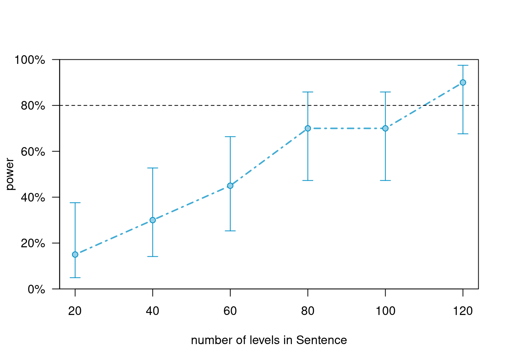
Using more items (or in this case sentences) is rather easy but it can make experiments longer which may lead to participants becoming tired or annoyed. An alternative would be to use more participants. Let us thus check how we can determine how many subjects we would need to reach a power of at least 80 percent.
Checking participants
What about increasing the number of participants?
We increase the number of participants to 120.
m1_ap <- simr::extend(m1,
along="ID",
n=120)
# inspect model
m1_ap## Linear mixed model fit by REML ['lmerMod']
## Formula: y ~ (1 | Sentence) + (1 | ID) + Group * SentenceType + WordOrder
## Data: regdat
## REML criterion at convergence: 2100
## Random effects:
## Groups Name Std.Dev.
## Sentence (Intercept) 0.707
## ID (Intercept) 0.316
## Residual 2.000
## Number of obs: 480, groups: Sentence, 24; ID, 20
## Fixed Effects:
## (Intercept)
## 0.52
## GroupL2English
## 0.52
## SentenceTypeSentenceAdverbial
## 0.52
## WordOrderV3
## 0.52
## GroupL2English:SentenceTypeSentenceAdverbial
## 0.52Check power when using 120 participants
sim_m1_ap_gst <- powerSim(m1_ap,
nsim=20,
test = fcompare(y ~ WordOrder + Group + SentenceType))## Simulating: | |Simulating: |=== |Simulating: |====== |Simulating: |========= |Simulating: |============= |Simulating: |================ |Simulating: |=================== |Simulating: |======================= |Simulating: |========================== |Simulating: |============================= |Simulating: |================================= |Simulating: |==================================== |Simulating: |======================================= |Simulating: |========================================== |Simulating: |============================================== |Simulating: |================================================= |Simulating: |==================================================== |Simulating: |======================================================== |Simulating: |=========================================================== |Simulating: |============================================================== |Simulating: |==================================================================|# inspect
sim_m1_ap_gst## Power for model comparison, (95% confidence interval):
## 80.00% (56.34, 94.27)
##
## Test: Likelihood ratio
## Comparison to y ~ WordOrder + Group + SentenceType + [re]
##
## Based on 20 simulations, (0 warnings, 0 errors)
## alpha = 0.05, nrow = 2880
##
## Time elapsed: 0 h 0 m 3 sThe data with 120 participants is sufficient and would detect a weak effect of Group * SentenceType with 16 percent accuracy
pcurve_m1_ap_gst <- simr::powerCurve(m1_ap,
test=fcompare(y ~ Group + SentenceType + WordOrder),
along = "ID",
nsim=20)## Calculating power at 10 sample sizes along ID## boundary (singular) fit: see help('isSingular')
## boundary (singular) fit: see help('isSingular')
## boundary (singular) fit: see help('isSingular')
## boundary (singular) fit: see help('isSingular')
## boundary (singular) fit: see help('isSingular')
## boundary (singular) fit: see help('isSingular')
## boundary (singular) fit: see help('isSingular')
## boundary (singular) fit: see help('isSingular')
## boundary (singular) fit: see help('isSingular')
## boundary (singular) fit: see help('isSingular')
## boundary (singular) fit: see help('isSingular')
## boundary (singular) fit: see help('isSingular')
## boundary (singular) fit: see help('isSingular')
## boundary (singular) fit: see help('isSingular')
## boundary (singular) fit: see help('isSingular')
## boundary (singular) fit: see help('isSingular')
## boundary (singular) fit: see help('isSingular')
## boundary (singular) fit: see help('isSingular')
## boundary (singular) fit: see help('isSingular')
## boundary (singular) fit: see help('isSingular')
## boundary (singular) fit: see help('isSingular')
## boundary (singular) fit: see help('isSingular')
## boundary (singular) fit: see help('isSingular')
## boundary (singular) fit: see help('isSingular')# show plot
plot(pcurve_m1_ap_gst)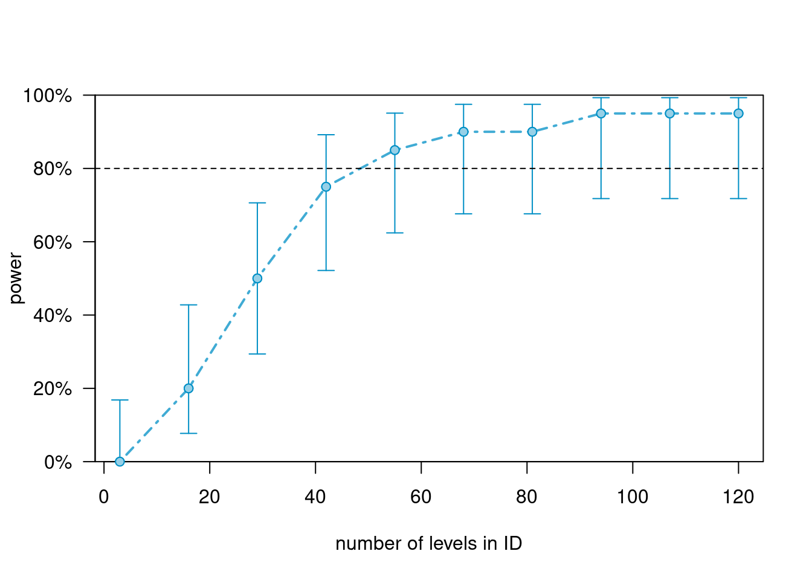
Generating data and a glmer
In order to perform a power analysis, we will start by loading the tidyverse package to process the data and by generating a data that we will use to determine the power of a regression model.
This simulated data set has
- 200 data points
- 2 Conditions (Control, Test)
- 10 Subjects
- 10 Items
# generate data
simdat <- data.frame(
sub <- rep(paste0("Sub", 1:10), each = 20),
cond <- rep(c(
rep("Control", 10),
rep("Test", 10))
, 10),
itm <- as.character(rep(1:10, 20))
) %>%
dplyr::rename(Subject = 1,
Condition = 2,
Item = 3) %>%
dplyr::mutate_if(is.character, factor)
# inspect
head(simdat, 15)## Subject Condition Item
## 1 Sub1 Control 1
## 2 Sub1 Control 2
## 3 Sub1 Control 3
## 4 Sub1 Control 4
## 5 Sub1 Control 5
## 6 Sub1 Control 6
## 7 Sub1 Control 7
## 8 Sub1 Control 8
## 9 Sub1 Control 9
## 10 Sub1 Control 10
## 11 Sub1 Test 1
## 12 Sub1 Test 2
## 13 Sub1 Test 3
## 14 Sub1 Test 4
## 15 Sub1 Test 5EXERCISE TIME!
`
- Can you create a data set with 5 Subjects, 5 Items (each) for 4 Conditions?
Answer
## Subjects Items Condition
## 1 Subject1 Item1 Condition1
## 2 Subject1 Item2 Condition1
## 3 Subject1 Item3 Condition1
## 4 Subject1 Item4 Condition1
## 5 Subject1 Item5 Condition1
## 6 Subject1 Item1 Condition2
## 7 Subject1 Item2 Condition2
## 8 Subject1 Item3 Condition2
## 9 Subject1 Item4 Condition2
## 10 Subject1 Item5 Condition2
## 11 Subject1 Item1 Condition3
## 12 Subject1 Item2 Condition3
## 13 Subject1 Item3 Condition3
## 14 Subject1 Item4 Condition3
## 15 Subject1 Item5 Condition3
## 16 Subject1 Item1 Condition4
## 17 Subject1 Item2 Condition4
## 18 Subject1 Item3 Condition4
## 19 Subject1 Item4 Condition4
## 20 Subject1 Item5 Condition4`
Generating the model
As before with the lmer, we specify the model parameters - but when generating glmers, we only need to specify the effects for the fixed effects and the intercept and define the variability in the random effects (we do not need to specify the residuals).
# Intercept + slopes for fixed effects
# (Group, SentenceType, WordOrder, and an interaction between Group * SentenceType)
fixed <- c(.52, .52)
# Random intercepts for Sentence and ID
rand <- list(0.5, 0.1)We now generate the model and fit it to the data.
m2 <- simr::makeGlmer(y ~ (1|Subject) + (1|Item) + Condition,
family = "binomial",
fixef=fixed,
VarCorr=rand,
data=simdat)
# inspect
sjPlot::tab_model(m2)| y | |||
|---|---|---|---|
| Predictors | Odds Ratios | CI | p |
| (Intercept) | 1.68 | 0.89 – 3.17 | 0.108 |
| Condition [Test] | 1.68 | 0.94 – 3.02 | 0.081 |
| Random Effects | |||
| σ2 | 3.29 | ||
| τ00 Subject | 0.50 | ||
| τ00 Item | 0.10 | ||
| ICC | 0.15 | ||
| N Subject | 10 | ||
| N Item | 10 | ||
| Observations | 200 | ||
| Marginal R2 / Conditional R2 | 0.017 / 0.169 | ||
Next, we extract power. In this case, we use fixed in the test argument which allows us to test a specific predictor.
# set seed for replicability
set.seed(12345)
# perform power analysis for present model
rsim_m2_c <- powerSim(m2, fixed("ConditionTest", "z"),
nsim=20)## Simulating: | |Simulating: |=== |Simulating: |====== |Simulating: |========= |Simulating: |============= |Simulating: |================ |Simulating: |=================== |Simulating: |======================= |Simulating: |========================== |Simulating: |============================= |Simulating: |================================= |Simulating: |==================================== |Simulating: |======================================= |Simulating: |========================================== |Simulating: |============================================== |Simulating: |================================================= |Simulating: |==================================================== |Simulating: |======================================================== |Simulating: |=========================================================== |Simulating: |============================================================== |Simulating: |==================================================================|# inspect
rsim_m2_c## Power for predictor 'ConditionTest', (95% confidence interval):
## 35.00% (15.39, 59.22)
##
## Test: z-test
## Effect size for ConditionTest is 0.52
##
## Based on 20 simulations, (0 warnings, 0 errors)
## alpha = 0.05, nrow = 200
##
## Time elapsed: 0 h 0 m 1 sThe data is sufficient and would detect a weak effect of ConditionTest with only 7 percent accuracy
Extending the data
Like before, we can now extend the data to see how many participants or items we would need to reach the 80 percent confidence threshold.
Adding Items
We start of by increasing the number of items from 10 to 40. This means that our new data/model has the following characteristics.
2 Conditions
10 Subjects
40 Items (from 10)
Keep in mind though that when extending the data/model in this way, each combination occurs only once!
m2_ai <- simr::extend(m2,
along="Item",
n=40)Next, we plot the power curve.
pcurve_m2_ai_c <- powerCurve(m2_ai,
fixed("ConditionTest", "z"),
along = "Item",
nsim = 20,
breaks=seq(10, 40, 5))## Calculating power at 7 sample sizes along Item## Simulating: | |Simulating: |=== |Simulating: |====== |Simulating: |========= |Simulating: |============= |Simulating: |================ |Simulating: |=================== |Simulating: |======================= |Simulating: |========================== |Simulating: |============================= |Simulating: |================================= |Simulating: |==================================== |Simulating: |======================================= |Simulating: |========================================== |Simulating: |============================================== |Simulating: |================================================= |Simulating: |==================================================== |Simulating: |======================================================== |Simulating: |=========================================================== |Simulating: |============================================================== |Simulating: |==================================================================|(1/7) (1/7) Simulating: | |(1/7) Simulating: |=== |(1/7) Simulating: |====== |(1/7) Simulating: |========= |(1/7) Simulating: |============ |## boundary (singular) fit: see help('isSingular')## (1/7) Simulating: |=============== |(1/7) Simulating: |================== |## boundary (singular) fit: see help('isSingular')## (1/7) Simulating: |===================== |(1/7) Simulating: |======================== |(1/7) Simulating: |=========================== |## boundary (singular) fit: see help('isSingular')## (1/7) Simulating: |============================== |## boundary (singular) fit: see help('isSingular')## (1/7) Simulating: |================================= |(1/7) Simulating: |==================================== |(1/7) Simulating: |======================================= |## boundary (singular) fit: see help('isSingular')## (1/7) Simulating: |========================================== |(1/7) Simulating: |============================================= |## boundary (singular) fit: see help('isSingular')## (1/7) Simulating: |================================================ |## boundary (singular) fit: see help('isSingular')## (1/7) Simulating: |=================================================== |(1/7) Simulating: |====================================================== |## boundary (singular) fit: see help('isSingular')## (1/7) Simulating: |========================================================= |## boundary (singular) fit: see help('isSingular')## (1/7) Simulating: |============================================================|(1/7) (2/7) (2/7) Simulating: | |(2/7) Simulating: |=== |(2/7) Simulating: |====== |(2/7) Simulating: |========= |(2/7) Simulating: |============ |## boundary (singular) fit: see help('isSingular')## (2/7) Simulating: |=============== |(2/7) Simulating: |================== |## boundary (singular) fit: see help('isSingular')## (2/7) Simulating: |===================== |(2/7) Simulating: |======================== |(2/7) Simulating: |=========================== |## boundary (singular) fit: see help('isSingular')## (2/7) Simulating: |============================== |## boundary (singular) fit: see help('isSingular')## (2/7) Simulating: |================================= |(2/7) Simulating: |==================================== |## boundary (singular) fit: see help('isSingular')## (2/7) Simulating: |======================================= |## boundary (singular) fit: see help('isSingular')## (2/7) Simulating: |========================================== |(2/7) Simulating: |============================================= |## boundary (singular) fit: see help('isSingular')## (2/7) Simulating: |================================================ |(2/7) Simulating: |=================================================== |(2/7) Simulating: |====================================================== |(2/7) Simulating: |========================================================= |## boundary (singular) fit: see help('isSingular')## (2/7) Simulating: |============================================================|(2/7) (3/7) (3/7) Simulating: | |(3/7) Simulating: |=== |(3/7) Simulating: |====== |(3/7) Simulating: |========= |(3/7) Simulating: |============ |## boundary (singular) fit: see help('isSingular')## (3/7) Simulating: |=============== |## boundary (singular) fit: see help('isSingular')## (3/7) Simulating: |================== |(3/7) Simulating: |===================== |(3/7) Simulating: |======================== |(3/7) Simulating: |=========================== |(3/7) Simulating: |============================== |(3/7) Simulating: |================================= |(3/7) Simulating: |==================================== |(3/7) Simulating: |======================================= |## boundary (singular) fit: see help('isSingular')## (3/7) Simulating: |========================================== |(3/7) Simulating: |============================================= |(3/7) Simulating: |================================================ |(3/7) Simulating: |=================================================== |(3/7) Simulating: |====================================================== |(3/7) Simulating: |========================================================= |(3/7) Simulating: |============================================================|(3/7) (4/7) (4/7) Simulating: | |(4/7) Simulating: |=== |(4/7) Simulating: |====== |(4/7) Simulating: |========= |(4/7) Simulating: |============ |## boundary (singular) fit: see help('isSingular')## (4/7) Simulating: |=============== |## boundary (singular) fit: see help('isSingular')## (4/7) Simulating: |================== |(4/7) Simulating: |===================== |(4/7) Simulating: |======================== |(4/7) Simulating: |=========================== |(4/7) Simulating: |============================== |(4/7) Simulating: |================================= |(4/7) Simulating: |==================================== |(4/7) Simulating: |======================================= |(4/7) Simulating: |========================================== |(4/7) Simulating: |============================================= |(4/7) Simulating: |================================================ |(4/7) Simulating: |=================================================== |(4/7) Simulating: |====================================================== |(4/7) Simulating: |========================================================= |(4/7) Simulating: |============================================================|(4/7) (5/7) (5/7) Simulating: | |(5/7) Simulating: |=== |(5/7) Simulating: |====== |(5/7) Simulating: |========= |(5/7) Simulating: |============ |## boundary (singular) fit: see help('isSingular')## (5/7) Simulating: |=============== |## boundary (singular) fit: see help('isSingular')## (5/7) Simulating: |================== |(5/7) Simulating: |===================== |(5/7) Simulating: |======================== |(5/7) Simulating: |=========================== |(5/7) Simulating: |============================== |(5/7) Simulating: |================================= |(5/7) Simulating: |==================================== |(5/7) Simulating: |======================================= |(5/7) Simulating: |========================================== |(5/7) Simulating: |============================================= |(5/7) Simulating: |================================================ |(5/7) Simulating: |=================================================== |(5/7) Simulating: |====================================================== |(5/7) Simulating: |========================================================= |(5/7) Simulating: |============================================================|(5/7) (6/7) (6/7) Simulating: | |(6/7) Simulating: |=== |(6/7) Simulating: |====== |(6/7) Simulating: |========= |(6/7) Simulating: |============ |## boundary (singular) fit: see help('isSingular')## (6/7) Simulating: |=============== |(6/7) Simulating: |================== |(6/7) Simulating: |===================== |(6/7) Simulating: |======================== |(6/7) Simulating: |=========================== |(6/7) Simulating: |============================== |(6/7) Simulating: |================================= |(6/7) Simulating: |==================================== |(6/7) Simulating: |======================================= |(6/7) Simulating: |========================================== |(6/7) Simulating: |============================================= |(6/7) Simulating: |================================================ |(6/7) Simulating: |=================================================== |(6/7) Simulating: |====================================================== |(6/7) Simulating: |========================================================= |(6/7) Simulating: |============================================================|(6/7) (7/7) (7/7) Simulating: | |(7/7) Simulating: |=== |(7/7) Simulating: |====== |(7/7) Simulating: |========= |(7/7) Simulating: |============ |(7/7) Simulating: |=============== |## boundary (singular) fit: see help('isSingular')## (7/7) Simulating: |================== |(7/7) Simulating: |===================== |(7/7) Simulating: |======================== |(7/7) Simulating: |=========================== |(7/7) Simulating: |============================== |(7/7) Simulating: |================================= |(7/7) Simulating: |==================================== |(7/7) Simulating: |======================================= |(7/7) Simulating: |========================================== |(7/7) Simulating: |============================================= |(7/7) Simulating: |================================================ |(7/7) Simulating: |=================================================== |(7/7) Simulating: |====================================================== |(7/7) Simulating: |========================================================= |(7/7) Simulating: |============================================================|(7/7) # show plot
plot(pcurve_m2_ai_c)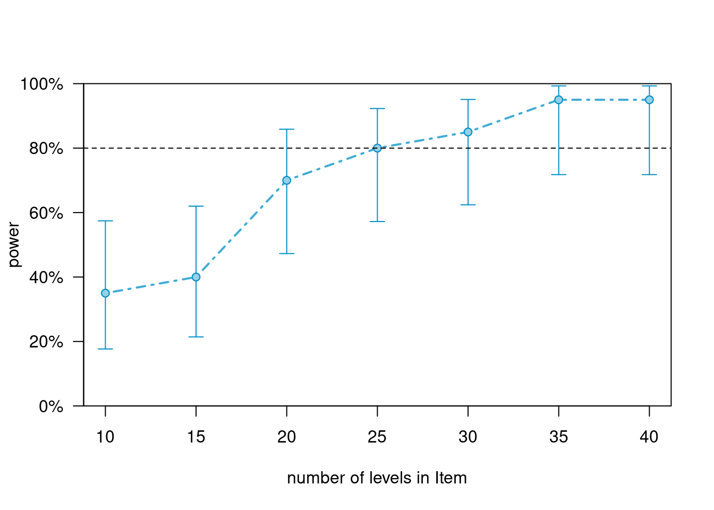
The power curve shows that we breach the 80 percent threshold with about 35 items.
Adding subjects
An alternative to adding items is, of course, to use more subjects or participants. We thus continue by increasing the number of participants from 10 to 40. This means that our new data/model has the following characteristics.
2 Conditions
10 Items
40 Subjects (from 10)
Again, keep in mind though that when extending the data/model in this way, each combination occurs only once!
m2_as <- simr::extend(m2,
along="Subject",
n=40)
# inspect model
sjPlot::tab_model(m2_as)| y | |||
|---|---|---|---|
| Predictors | Odds Ratios | CI | p |
| (Intercept) | 1.68 | 0.89 – 3.17 | 0.108 |
| Condition [Test] | 1.68 | 0.94 – 3.02 | 0.081 |
| Random Effects | |||
| σ2 | 3.29 | ||
| τ00 Subject | 0.50 | ||
| τ00 Item | 0.10 | ||
| ICC | 0.15 | ||
| N Subject | 10 | ||
| N Item | 10 | ||
| Observations | 200 | ||
| Marginal R2 / Conditional R2 | 0.017 / 0.169 | ||
As before, we plot power curve.
pcurve_m2_as_c <- powerCurve(m2_as,
fixed("ConditionTest", "z"),
along = "Subject",
nsim = 20,
breaks=seq(10, 40, 5))## Calculating power at 7 sample sizes along Subject## Simulating: | |Simulating: |=== |Simulating: |====== |Simulating: |========= |Simulating: |============= |Simulating: |================ |Simulating: |=================== |Simulating: |======================= |Simulating: |========================== |Simulating: |============================= |Simulating: |================================= |Simulating: |==================================== |Simulating: |======================================= |Simulating: |========================================== |Simulating: |============================================== |Simulating: |================================================= |Simulating: |==================================================== |Simulating: |======================================================== |Simulating: |=========================================================== |Simulating: |============================================================== |Simulating: |==================================================================|(1/7) (1/7) Simulating: | |## boundary (singular) fit: see help('isSingular')## (1/7) Simulating: |=== |(1/7) Simulating: |====== |## boundary (singular) fit: see help('isSingular')## (1/7) Simulating: |========= |(1/7) Simulating: |============ |## boundary (singular) fit: see help('isSingular')## (1/7) Simulating: |=============== |(1/7) Simulating: |================== |## boundary (singular) fit: see help('isSingular')## (1/7) Simulating: |===================== |## boundary (singular) fit: see help('isSingular')## (1/7) Simulating: |======================== |## boundary (singular) fit: see help('isSingular')## (1/7) Simulating: |=========================== |(1/7) Simulating: |============================== |(1/7) Simulating: |================================= |## boundary (singular) fit: see help('isSingular')## (1/7) Simulating: |==================================== |## boundary (singular) fit: see help('isSingular')## (1/7) Simulating: |======================================= |(1/7) Simulating: |========================================== |(1/7) Simulating: |============================================= |## boundary (singular) fit: see help('isSingular')## (1/7) Simulating: |================================================ |(1/7) Simulating: |=================================================== |(1/7) Simulating: |====================================================== |## boundary (singular) fit: see help('isSingular')## (1/7) Simulating: |========================================================= |## boundary (singular) fit: see help('isSingular')## (1/7) Simulating: |============================================================|(1/7) (2/7) (2/7) Simulating: | |## boundary (singular) fit: see help('isSingular')## (2/7) Simulating: |=== |(2/7) Simulating: |====== |## boundary (singular) fit: see help('isSingular')## (2/7) Simulating: |========= |(2/7) Simulating: |============ |## boundary (singular) fit: see help('isSingular')## (2/7) Simulating: |=============== |(2/7) Simulating: |================== |## boundary (singular) fit: see help('isSingular')## (2/7) Simulating: |===================== |(2/7) Simulating: |======================== |(2/7) Simulating: |=========================== |(2/7) Simulating: |============================== |(2/7) Simulating: |================================= |## boundary (singular) fit: see help('isSingular')## (2/7) Simulating: |==================================== |## boundary (singular) fit: see help('isSingular')## (2/7) Simulating: |======================================= |(2/7) Simulating: |========================================== |(2/7) Simulating: |============================================= |## boundary (singular) fit: see help('isSingular')## (2/7) Simulating: |================================================ |(2/7) Simulating: |=================================================== |(2/7) Simulating: |====================================================== |## boundary (singular) fit: see help('isSingular')## (2/7) Simulating: |========================================================= |(2/7) Simulating: |============================================================|(2/7) (3/7) (3/7) Simulating: | |## boundary (singular) fit: see help('isSingular')## (3/7) Simulating: |=== |(3/7) Simulating: |====== |(3/7) Simulating: |========= |(3/7) Simulating: |============ |(3/7) Simulating: |=============== |(3/7) Simulating: |================== |(3/7) Simulating: |===================== |(3/7) Simulating: |======================== |(3/7) Simulating: |=========================== |(3/7) Simulating: |============================== |(3/7) Simulating: |================================= |(3/7) Simulating: |==================================== |(3/7) Simulating: |======================================= |(3/7) Simulating: |========================================== |(3/7) Simulating: |============================================= |(3/7) Simulating: |================================================ |(3/7) Simulating: |=================================================== |(3/7) Simulating: |====================================================== |(3/7) Simulating: |========================================================= |## boundary (singular) fit: see help('isSingular')## (3/7) Simulating: |============================================================|(3/7) (4/7) (4/7) Simulating: | |(4/7) Simulating: |=== |(4/7) Simulating: |====== |(4/7) Simulating: |========= |(4/7) Simulating: |============ |(4/7) Simulating: |=============== |(4/7) Simulating: |================== |(4/7) Simulating: |===================== |(4/7) Simulating: |======================== |(4/7) Simulating: |=========================== |(4/7) Simulating: |============================== |(4/7) Simulating: |================================= |(4/7) Simulating: |==================================== |(4/7) Simulating: |======================================= |(4/7) Simulating: |========================================== |(4/7) Simulating: |============================================= |(4/7) Simulating: |================================================ |(4/7) Simulating: |=================================================== |(4/7) Simulating: |====================================================== |(4/7) Simulating: |========================================================= |(4/7) Simulating: |============================================================|(4/7) (5/7) (5/7) Simulating: | |## boundary (singular) fit: see help('isSingular')## (5/7) Simulating: |=== |(5/7) Simulating: |====== |## boundary (singular) fit: see help('isSingular')## (5/7) Simulating: |========= |(5/7) Simulating: |============ |(5/7) Simulating: |=============== |(5/7) Simulating: |================== |(5/7) Simulating: |===================== |(5/7) Simulating: |======================== |(5/7) Simulating: |=========================== |(5/7) Simulating: |============================== |(5/7) Simulating: |================================= |(5/7) Simulating: |==================================== |(5/7) Simulating: |======================================= |(5/7) Simulating: |========================================== |(5/7) Simulating: |============================================= |(5/7) Simulating: |================================================ |(5/7) Simulating: |=================================================== |(5/7) Simulating: |====================================================== |(5/7) Simulating: |========================================================= |(5/7) Simulating: |============================================================|(5/7) (6/7) (6/7) Simulating: | |(6/7) Simulating: |=== |(6/7) Simulating: |====== |(6/7) Simulating: |========= |(6/7) Simulating: |============ |(6/7) Simulating: |=============== |(6/7) Simulating: |================== |(6/7) Simulating: |===================== |(6/7) Simulating: |======================== |(6/7) Simulating: |=========================== |(6/7) Simulating: |============================== |(6/7) Simulating: |================================= |(6/7) Simulating: |==================================== |(6/7) Simulating: |======================================= |(6/7) Simulating: |========================================== |(6/7) Simulating: |============================================= |(6/7) Simulating: |================================================ |(6/7) Simulating: |=================================================== |(6/7) Simulating: |====================================================== |(6/7) Simulating: |========================================================= |(6/7) Simulating: |============================================================|(6/7) (7/7) (7/7) Simulating: | |(7/7) Simulating: |=== |(7/7) Simulating: |====== |(7/7) Simulating: |========= |(7/7) Simulating: |============ |(7/7) Simulating: |=============== |(7/7) Simulating: |================== |(7/7) Simulating: |===================== |(7/7) Simulating: |======================== |(7/7) Simulating: |=========================== |(7/7) Simulating: |============================== |(7/7) Simulating: |================================= |(7/7) Simulating: |==================================== |(7/7) Simulating: |======================================= |(7/7) Simulating: |========================================== |(7/7) Simulating: |============================================= |(7/7) Simulating: |================================================ |(7/7) Simulating: |=================================================== |(7/7) Simulating: |====================================================== |(7/7) Simulating: |========================================================= |(7/7) Simulating: |============================================================|(7/7) # show plot
plot(pcurve_m2_as_c)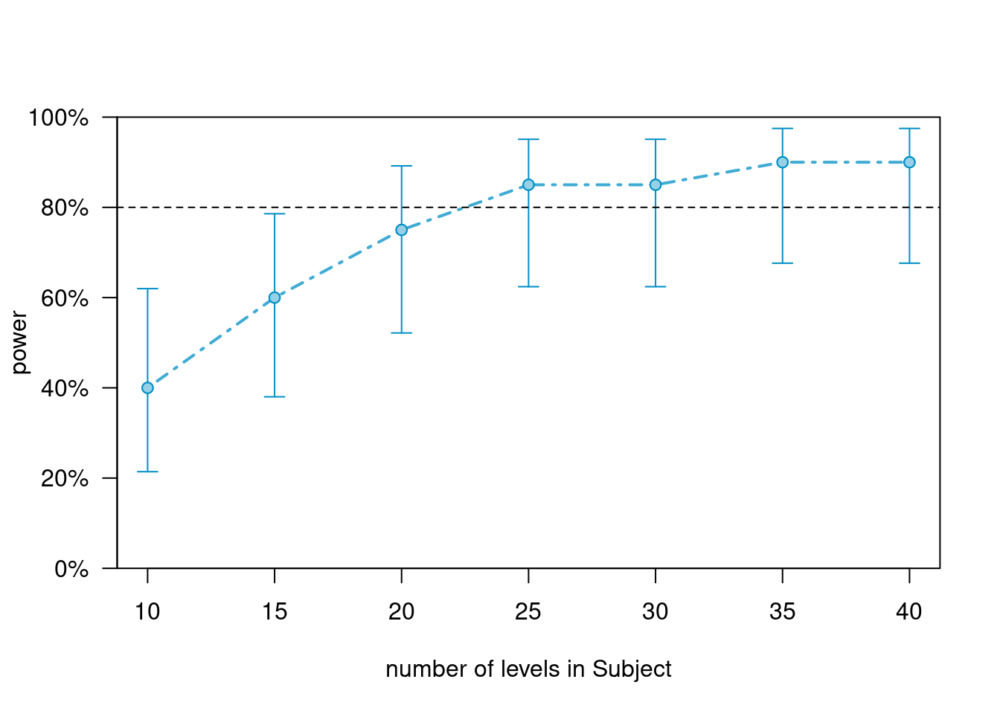
How often does each combination occur?
Only once!
So, what if we increase the number of combinations (this is particularly important when using a *repeated measures** design)? Below, we increase the number of configuration from 1 to 10 so that each item is shown 10 times to the same participant. This means that our new data/model has the following characteristics.
2 Conditions
10 Items
10 Subjects
Now each combination of item and subject occurs 10 times!
m2_asi_c <- extend(m2,
within="Subject+Item",
n=10)
# perform power calculation
pcurve_m2_asi_c <- powerCurve(m2_asi_c,
fixed("ConditionTest", "z"),
within="Subject+Item",
nsim = 20,
breaks=seq(2, 10, 2))## Calculating power at 5 sample sizes within Subject+Item## Simulating: | |Simulating: |=== |Simulating: |====== |Simulating: |========= |Simulating: |============= |Simulating: |================ |Simulating: |=================== |Simulating: |======================= |Simulating: |========================== |Simulating: |============================= |Simulating: |================================= |Simulating: |==================================== |Simulating: |======================================= |Simulating: |========================================== |Simulating: |============================================== |Simulating: |================================================= |Simulating: |==================================================== |Simulating: |======================================================== |Simulating: |=========================================================== |Simulating: |============================================================== |Simulating: |==================================================================|(1/5) (1/5) Simulating: | |(1/5) Simulating: |=== |(1/5) Simulating: |====== |(1/5) Simulating: |========= |(1/5) Simulating: |============ |(1/5) Simulating: |=============== |(1/5) Simulating: |================== |(1/5) Simulating: |===================== |(1/5) Simulating: |======================== |(1/5) Simulating: |=========================== |(1/5) Simulating: |============================== |(1/5) Simulating: |================================= |(1/5) Simulating: |==================================== |(1/5) Simulating: |======================================= |(1/5) Simulating: |========================================== |## boundary (singular) fit: see help('isSingular')## (1/5) Simulating: |============================================= |## boundary (singular) fit: see help('isSingular')## (1/5) Simulating: |================================================ |## boundary (singular) fit: see help('isSingular')## (1/5) Simulating: |=================================================== |## boundary (singular) fit: see help('isSingular')## (1/5) Simulating: |====================================================== |(1/5) Simulating: |========================================================= |(1/5) Simulating: |============================================================|(1/5) (2/5) (2/5) Simulating: | |(2/5) Simulating: |=== |(2/5) Simulating: |====== |(2/5) Simulating: |========= |## boundary (singular) fit: see help('isSingular')## (2/5) Simulating: |============ |(2/5) Simulating: |=============== |(2/5) Simulating: |================== |(2/5) Simulating: |===================== |(2/5) Simulating: |======================== |(2/5) Simulating: |=========================== |(2/5) Simulating: |============================== |(2/5) Simulating: |================================= |## boundary (singular) fit: see help('isSingular')## (2/5) Simulating: |==================================== |## boundary (singular) fit: see help('isSingular')## (2/5) Simulating: |======================================= |## boundary (singular) fit: see help('isSingular')## (2/5) Simulating: |========================================== |(2/5) Simulating: |============================================= |(2/5) Simulating: |================================================ |(2/5) Simulating: |=================================================== |## boundary (singular) fit: see help('isSingular')## (2/5) Simulating: |====================================================== |(2/5) Simulating: |========================================================= |(2/5) Simulating: |============================================================|(2/5) (3/5) (3/5) Simulating: | |(3/5) Simulating: |=== |(3/5) Simulating: |====== |(3/5) Simulating: |========= |(3/5) Simulating: |============ |(3/5) Simulating: |=============== |(3/5) Simulating: |================== |(3/5) Simulating: |===================== |(3/5) Simulating: |======================== |(3/5) Simulating: |=========================== |(3/5) Simulating: |============================== |(3/5) Simulating: |================================= |## boundary (singular) fit: see help('isSingular')## (3/5) Simulating: |==================================== |(3/5) Simulating: |======================================= |(3/5) Simulating: |========================================== |(3/5) Simulating: |============================================= |(3/5) Simulating: |================================================ |(3/5) Simulating: |=================================================== |## boundary (singular) fit: see help('isSingular')## (3/5) Simulating: |====================================================== |(3/5) Simulating: |========================================================= |(3/5) Simulating: |============================================================|(3/5) (4/5) (4/5) Simulating: | |(4/5) Simulating: |=== |(4/5) Simulating: |====== |(4/5) Simulating: |========= |(4/5) Simulating: |============ |(4/5) Simulating: |=============== |(4/5) Simulating: |================== |(4/5) Simulating: |===================== |(4/5) Simulating: |======================== |(4/5) Simulating: |=========================== |(4/5) Simulating: |============================== |(4/5) Simulating: |================================= |## boundary (singular) fit: see help('isSingular')## (4/5) Simulating: |==================================== |(4/5) Simulating: |======================================= |(4/5) Simulating: |========================================== |(4/5) Simulating: |============================================= |(4/5) Simulating: |================================================ |(4/5) Simulating: |=================================================== |## boundary (singular) fit: see help('isSingular')## (4/5) Simulating: |====================================================== |(4/5) Simulating: |========================================================= |(4/5) Simulating: |============================================================|(4/5) (5/5) (5/5) Simulating: | |(5/5) Simulating: |=== |(5/5) Simulating: |====== |(5/5) Simulating: |========= |(5/5) Simulating: |============ |(5/5) Simulating: |=============== |(5/5) Simulating: |================== |(5/5) Simulating: |===================== |(5/5) Simulating: |======================== |(5/5) Simulating: |=========================== |(5/5) Simulating: |============================== |(5/5) Simulating: |================================= |(5/5) Simulating: |==================================== |(5/5) Simulating: |======================================= |(5/5) Simulating: |========================================== |(5/5) Simulating: |============================================= |(5/5) Simulating: |================================================ |(5/5) Simulating: |=================================================== |(5/5) Simulating: |====================================================== |(5/5) Simulating: |========================================================= |(5/5) Simulating: |============================================================|(5/5) # show plot
plot(pcurve_m2_asi_c)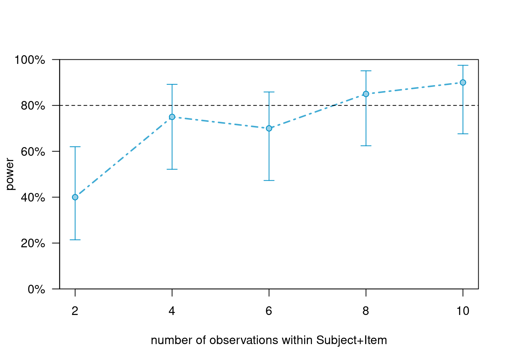
If we did this, then even 5 subjects may be enough to reach the 80 percent threshold.
Adding subjects and items
We can also add subjects and items simultaneously to address questions like How many subjects would I need if I had 30 items?. Hence, we increase both subjects and items from 10 to 30. This means that our new data/model has the following characteristics.
2 Conditions
30 Items (from 10)
30 Subjects (from 10)
In this case, we return to each combination only occurring once.
m2_as <- simr::extend(m2,
along="Subject",
n=30)
m2_asi <- simr::extend(m2_as,
along="Item",
n=30)
# inspect model
sjPlot::tab_model(m2_asi)| y | |||
|---|---|---|---|
| Predictors | Odds Ratios | CI | p |
| (Intercept) | 1.68 | 0.89 – 3.17 | 0.108 |
| Condition [Test] | 1.68 | 0.94 – 3.02 | 0.081 |
| Random Effects | |||
| σ2 | 3.29 | ||
| τ00 Subject | 0.50 | ||
| τ00 Item | 0.10 | ||
| ICC | 0.15 | ||
| N Subject | 10 | ||
| N Item | 10 | ||
| Observations | 200 | ||
| Marginal R2 / Conditional R2 | 0.017 / 0.169 | ||
We can now plot power curve to answer the question How many subjects do you need if you have 30 Items?.
pcurve_m2_asi_c <- powerCurve(m2_asi,
fixed("ConditionTest", "z"),
along = "Subject",
breaks = seq(5, 30, 5),
nsim = 20)## Calculating power at 6 sample sizes along Subject## Simulating: | |Simulating: |=== |Simulating: |====== |Simulating: |========= |Simulating: |============= |Simulating: |================ |Simulating: |=================== |Simulating: |======================= |Simulating: |========================== |Simulating: |============================= |Simulating: |================================= |Simulating: |==================================== |Simulating: |======================================= |Simulating: |========================================== |Simulating: |============================================== |Simulating: |================================================= |Simulating: |==================================================== |Simulating: |======================================================== |Simulating: |=========================================================== |Simulating: |============================================================== |Simulating: |==================================================================|(1/6) (1/6) Simulating: | |## boundary (singular) fit: see help('isSingular')## (1/6) Simulating: |=== |(1/6) Simulating: |====== |(1/6) Simulating: |========= |(1/6) Simulating: |============ |(1/6) Simulating: |=============== |(1/6) Simulating: |================== |(1/6) Simulating: |===================== |(1/6) Simulating: |======================== |(1/6) Simulating: |=========================== |(1/6) Simulating: |============================== |(1/6) Simulating: |================================= |(1/6) Simulating: |==================================== |## boundary (singular) fit: see help('isSingular')## (1/6) Simulating: |======================================= |## boundary (singular) fit: see help('isSingular')## (1/6) Simulating: |========================================== |(1/6) Simulating: |============================================= |(1/6) Simulating: |================================================ |## boundary (singular) fit: see help('isSingular')## (1/6) Simulating: |=================================================== |## boundary (singular) fit: see help('isSingular')## (1/6) Simulating: |====================================================== |## boundary (singular) fit: see help('isSingular')## (1/6) Simulating: |========================================================= |(1/6) Simulating: |============================================================|(1/6) (2/6) (2/6) Simulating: | |(2/6) Simulating: |=== |(2/6) Simulating: |====== |(2/6) Simulating: |========= |## boundary (singular) fit: see help('isSingular')## (2/6) Simulating: |============ |(2/6) Simulating: |=============== |(2/6) Simulating: |================== |(2/6) Simulating: |===================== |(2/6) Simulating: |======================== |(2/6) Simulating: |=========================== |(2/6) Simulating: |============================== |(2/6) Simulating: |================================= |(2/6) Simulating: |==================================== |(2/6) Simulating: |======================================= |## boundary (singular) fit: see help('isSingular')## (2/6) Simulating: |========================================== |(2/6) Simulating: |============================================= |(2/6) Simulating: |================================================ |(2/6) Simulating: |=================================================== |## boundary (singular) fit: see help('isSingular')## (2/6) Simulating: |====================================================== |(2/6) Simulating: |========================================================= |(2/6) Simulating: |============================================================|(2/6) (3/6) (3/6) Simulating: | |(3/6) Simulating: |=== |(3/6) Simulating: |====== |(3/6) Simulating: |========= |(3/6) Simulating: |============ |(3/6) Simulating: |=============== |(3/6) Simulating: |================== |(3/6) Simulating: |===================== |(3/6) Simulating: |======================== |(3/6) Simulating: |=========================== |(3/6) Simulating: |============================== |(3/6) Simulating: |================================= |(3/6) Simulating: |==================================== |(3/6) Simulating: |======================================= |(3/6) Simulating: |========================================== |(3/6) Simulating: |============================================= |(3/6) Simulating: |================================================ |(3/6) Simulating: |=================================================== |(3/6) Simulating: |====================================================== |(3/6) Simulating: |========================================================= |(3/6) Simulating: |============================================================|(3/6) (4/6) (4/6) Simulating: | |(4/6) Simulating: |=== |(4/6) Simulating: |====== |(4/6) Simulating: |========= |(4/6) Simulating: |============ |(4/6) Simulating: |=============== |(4/6) Simulating: |================== |(4/6) Simulating: |===================== |(4/6) Simulating: |======================== |(4/6) Simulating: |=========================== |(4/6) Simulating: |============================== |(4/6) Simulating: |================================= |(4/6) Simulating: |==================================== |(4/6) Simulating: |======================================= |(4/6) Simulating: |========================================== |(4/6) Simulating: |============================================= |(4/6) Simulating: |================================================ |(4/6) Simulating: |=================================================== |(4/6) Simulating: |====================================================== |(4/6) Simulating: |========================================================= |(4/6) Simulating: |============================================================|(4/6) (5/6) (5/6) Simulating: | |(5/6) Simulating: |=== |(5/6) Simulating: |====== |(5/6) Simulating: |========= |(5/6) Simulating: |============ |(5/6) Simulating: |=============== |(5/6) Simulating: |================== |(5/6) Simulating: |===================== |(5/6) Simulating: |======================== |(5/6) Simulating: |=========================== |(5/6) Simulating: |============================== |(5/6) Simulating: |================================= |(5/6) Simulating: |==================================== |(5/6) Simulating: |======================================= |(5/6) Simulating: |========================================== |(5/6) Simulating: |============================================= |(5/6) Simulating: |================================================ |(5/6) Simulating: |=================================================== |(5/6) Simulating: |====================================================== |(5/6) Simulating: |========================================================= |(5/6) Simulating: |============================================================|(5/6) (6/6) (6/6) Simulating: | |(6/6) Simulating: |=== |(6/6) Simulating: |====== |(6/6) Simulating: |========= |(6/6) Simulating: |============ |(6/6) Simulating: |=============== |(6/6) Simulating: |================== |(6/6) Simulating: |===================== |(6/6) Simulating: |======================== |(6/6) Simulating: |=========================== |(6/6) Simulating: |============================== |(6/6) Simulating: |================================= |(6/6) Simulating: |==================================== |(6/6) Simulating: |======================================= |(6/6) Simulating: |========================================== |(6/6) Simulating: |============================================= |(6/6) Simulating: |================================================ |(6/6) Simulating: |=================================================== |(6/6) Simulating: |====================================================== |(6/6) Simulating: |========================================================= |(6/6) Simulating: |============================================================|(6/6) # show plot
plot(pcurve_m2_asi_c)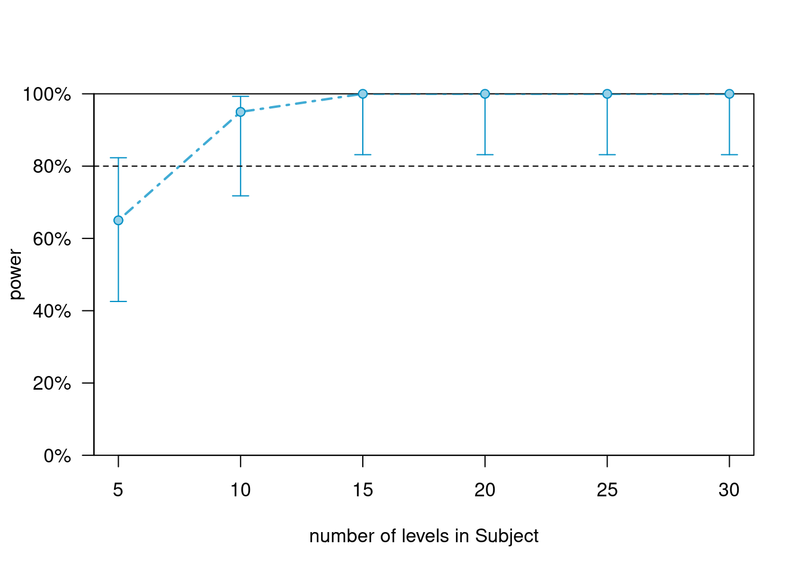
We can see that with 30 items, we would need only about 15 subjects to reach the 80 percent threshold.
We can also check the results in tabular form as shown below.
The results are shown below.
# print results
print(pcurve_m2_asi_c)## Power for predictor 'ConditionTest', (95% confidence interval),
## by number of levels in Subject:
## 5: 65.00% (40.78, 84.61) - 300 rows
## 10: 95.00% (75.13, 99.87) - 600 rows
## 15: 100.0% (83.16, 100.0) - 900 rows
## 20: 100.0% (83.16, 100.0) - 1200 rows
## 25: 100.0% (83.16, 100.0) - 1500 rows
## 30: 100.0% (83.16, 100.0) - 1800 rows
##
## Time elapsed: 0 h 0 m 16 sPost-Hoc Analyses
NOTE
Power analysis have also been used post-hoc to test if the sample size of studies was sufficient to detect meaningful effects. However, such post-hoc power calculations where the target effect size comes from the data, give misleading results (Hoenig and Heisey 2001; Perugini, Gallucci, and Costantini 2018) and should thus be treated with extreme care!
We begin by adding a response variable to our data. In this case, we vary the response variable ti a higher likelihood of obtaining gazes in the area of interests (AOI) in the test condition.
simdat2 <- simdat %>%
dplyr::arrange(Condition) %>%
dplyr::mutate(
dep <- c(sample(c("yes", "no"), 100, replace = T, prob = c(.5, .5)),
sample(c("yes", "no"), 100, replace = T, prob = c(.7, .3)))
) %>%
dplyr::mutate_if(is.character, factor) %>%
dplyr::rename(AOI = 4)
# inspect
head(simdat2, 20)## Subject Condition Item AOI
## 1 Sub1 Control 1 no
## 2 Sub1 Control 2 yes
## 3 Sub1 Control 3 no
## 4 Sub1 Control 4 yes
## 5 Sub1 Control 5 no
## 6 Sub1 Control 6 yes
## 7 Sub1 Control 7 no
## 8 Sub1 Control 8 yes
## 9 Sub1 Control 9 no
## 10 Sub1 Control 10 yes
## 11 Sub2 Control 1 no
## 12 Sub2 Control 2 no
## 13 Sub2 Control 3 yes
## 14 Sub2 Control 4 no
## 15 Sub2 Control 5 no
## 16 Sub2 Control 6 yes
## 17 Sub2 Control 7 no
## 18 Sub2 Control 8 yes
## 19 Sub2 Control 9 yes
## 20 Sub2 Control 10 yesNow that we have generated some data, we will fit a model to it and perform a power analysis on the observed effects.
We will fit a first model to the data. Thus, in a first step, we load the lme4 package to create a model, set a seed (to save the results and so that the results can be replicated), and then create an initial mixed-effects model.
# set seed for replicability
set.seed(12345)
# fit model
m3 <- glmer(AOI ~ (1|Subject) +(1|Item) + Condition,
family="binomial",
data=simdat2)
# inspect results
summary(m3)## Generalized linear mixed model fit by maximum likelihood (Laplace
## Approximation) [glmerMod]
## Family: binomial ( logit )
## Formula: AOI ~ (1 | Subject) + (1 | Item) + Condition
## Data: simdat2
##
## AIC BIC logLik deviance df.resid
## 259.3 272.5 -125.6 251.3 196
##
## Scaled residuals:
## Min 1Q Median 3Q Max
## -1.687 -1.151 0.593 0.869 0.869
##
## Random effects:
## Groups Name Variance Std.Dev.
## Subject (Intercept) 0 0
## Item (Intercept) 0 0
## Number of obs: 200, groups: Subject, 10; Item, 10
##
## Fixed effects:
## Estimate Std. Error z value Pr(>|z|)
## (Intercept) 0.282 0.202 1.40 0.163
## ConditionTest 0.764 0.305 2.51 0.012 *
## ---
## Signif. codes: 0 '***' 0.001 '**' 0.01 '*' 0.05 '.' 0.1 ' ' 1
##
## Correlation of Fixed Effects:
## (Intr)
## ConditinTst -0.663
## optimizer (Nelder_Mead) convergence code: 0 (OK)
## boundary (singular) fit: see help('isSingular')We now check the effect sizes of the predictors in the model. We can do this by displaying the results of the model using the tab_model function from the sjPlot package.
# tabulate results
sjPlot::tab_model(m3)| AOI | |||
|---|---|---|---|
| Predictors | Odds Ratios | CI | p |
| (Intercept) | 1.33 | 0.89 – 1.97 | 0.163 |
| Condition [Test] | 2.15 | 1.18 – 3.90 | 0.012 |
| Random Effects | |||
| σ2 | 3.29 | ||
| τ00 Subject | 0.00 | ||
| τ00 Item | 0.00 | ||
| N Subject | 10 | ||
| N Item | 10 | ||
| Observations | 200 | ||
| Marginal R2 / Conditional R2 | 0.043 / NA | ||
Now, we perform power analysis on an observed effect. This analysis tells us how likely the model is to find an observed effect given the data.
NOTE
We use a very low number of simulations (10) and we use the default z-test which is suboptimal for small samples (Bolker et al. 2009). In a proper study, you should increase the number of simulations (to at least 1000) and you should use a bootstrapping rather than a z-test (cf. Halekoh, Højsgaard, and others 2014).
What is the probability of finding the observed effect given the data?
# set seed for replicability
set.seed(12345)
# perform power analysis for present model
m3_pwr <- powerSim(m3,
fixed("ConditionTest", "z"),
nsim=20)
# inspect results
m3_pwrThe results of the power analysis show that, given the data at hand, the model would have detected the effect of Conidition:Test with a probability of m3_pwr$x percent. However, and as stated above, the results of such post-hoc power calculations (where the target effect size comes from the data) give misleading results (Hoenig and Heisey 2001) and should thus be treated with extreme care!
Fixing effects
We will set the effects that we obtained based on our “observed” data to check if, given the size of the data, we have enough power to detect a small effect of Condition. In a first step, we check the observed effects.
estimatesfixedeffects <- fixef(m3)
exp(estimatesfixedeffects)## (Intercept) ConditionTest
## 1.326 2.147We can see that the effect of Condition is rather small which makes it very hard to detect an effect. We will now change the size of the effect of ConditionTest to represent a truly small effect, i.e. on the brink of being noise but being just strong enough to be considered small. In other words, we will set the effect so that its odds ratio is exactly 1.68.
# set seed for replicability
set.seed(12345)
# perform power analysis for small effect
fixef(m3)["ConditionTest"] <- 0.519
estimatesfixedeffects <- fixef(m3)
exp(estimatesfixedeffects)## (Intercept) ConditionTest
## 1.326 1.680What is the probability of finding a weak effect given the data?
We now perform the power analysis.
# set seed for replicability
set.seed(12345)
# perform power analysis for present model
m3_pwr_se <- powerSim(m3,
fixed("ConditionTest", "z"),
nsim=20)
# inspect results
m3_pwr_seThe data is not sufficient and would detect a weak effect of Condition with only 8 percent accuracy
Power Analysis of Extended Data
We will now extend the data to see what sample size is needed to get to the 80 percent accuracy threshold. We begin by increasing the number of items from 10 to 30 to see if this would lead to a sufficient sample size.
# increase sample size
m3_ai <- extend(m3,
along="Item",
n=30)
# perform power simulation
m3_ai_pwr <- powerSim(m3_ai,
fixed("ConditionTest", "z"),
nsim=20)
# show results
m3_ai_pwrThe data with 30 Items is sufficient and would detect a weak effect of Condition with 18 percent accuracy
At what number of sentences are the data sufficient to detect an effect?
pcurve_m3_asi_c <- powerCurve(m3_ai,
fixed("ConditionTest", "z"),
along = "Item",
breaks = seq(5, 30, 5),
nsim = 20)## Simulating: | |Simulating: |=== |Simulating: |====== |Simulating: |========= |Simulating: |============= |Simulating: |================ |Simulating: |=================== |Simulating: |======================= |Simulating: |========================== |Simulating: |============================= |Simulating: |================================= |Simulating: |==================================== |Simulating: |======================================= |Simulating: |========================================== |Simulating: |============================================== |Simulating: |================================================= |Simulating: |==================================================== |Simulating: |======================================================== |Simulating: |=========================================================== |Simulating: |============================================================== |Simulating: |==================================================================|(1/6) (1/6) Simulating: | |(1/6) Simulating: |=== |(1/6) Simulating: |====== |(1/6) Simulating: |========= |(1/6) Simulating: |============ |(1/6) Simulating: |=============== |(1/6) Simulating: |================== |(1/6) Simulating: |===================== |(1/6) Simulating: |======================== |(1/6) Simulating: |=========================== |(1/6) Simulating: |============================== |(1/6) Simulating: |================================= |(1/6) Simulating: |==================================== |(1/6) Simulating: |======================================= |(1/6) Simulating: |========================================== |(1/6) Simulating: |============================================= |(1/6) Simulating: |================================================ |(1/6) Simulating: |=================================================== |(1/6) Simulating: |====================================================== |(1/6) Simulating: |========================================================= |(1/6) Simulating: |============================================================|(1/6) (2/6) (2/6) Simulating: | |(2/6) Simulating: |=== |(2/6) Simulating: |====== |(2/6) Simulating: |========= |(2/6) Simulating: |============ |(2/6) Simulating: |=============== |(2/6) Simulating: |================== |(2/6) Simulating: |===================== |(2/6) Simulating: |======================== |(2/6) Simulating: |=========================== |(2/6) Simulating: |============================== |(2/6) Simulating: |================================= |(2/6) Simulating: |==================================== |(2/6) Simulating: |======================================= |(2/6) Simulating: |========================================== |(2/6) Simulating: |============================================= |(2/6) Simulating: |================================================ |(2/6) Simulating: |=================================================== |(2/6) Simulating: |====================================================== |(2/6) Simulating: |========================================================= |(2/6) Simulating: |============================================================|(2/6) (3/6) (3/6) Simulating: | |(3/6) Simulating: |=== |(3/6) Simulating: |====== |(3/6) Simulating: |========= |(3/6) Simulating: |============ |(3/6) Simulating: |=============== |(3/6) Simulating: |================== |(3/6) Simulating: |===================== |(3/6) Simulating: |======================== |(3/6) Simulating: |=========================== |(3/6) Simulating: |============================== |(3/6) Simulating: |================================= |(3/6) Simulating: |==================================== |(3/6) Simulating: |======================================= |(3/6) Simulating: |========================================== |(3/6) Simulating: |============================================= |(3/6) Simulating: |================================================ |(3/6) Simulating: |=================================================== |(3/6) Simulating: |====================================================== |(3/6) Simulating: |========================================================= |(3/6) Simulating: |============================================================|(3/6) (4/6) (4/6) Simulating: | |(4/6) Simulating: |=== |(4/6) Simulating: |====== |(4/6) Simulating: |========= |(4/6) Simulating: |============ |(4/6) Simulating: |=============== |(4/6) Simulating: |================== |(4/6) Simulating: |===================== |(4/6) Simulating: |======================== |(4/6) Simulating: |=========================== |(4/6) Simulating: |============================== |(4/6) Simulating: |================================= |(4/6) Simulating: |==================================== |(4/6) Simulating: |======================================= |(4/6) Simulating: |========================================== |(4/6) Simulating: |============================================= |(4/6) Simulating: |================================================ |(4/6) Simulating: |=================================================== |(4/6) Simulating: |====================================================== |(4/6) Simulating: |========================================================= |(4/6) Simulating: |============================================================|(4/6) (5/6) (5/6) Simulating: | |(5/6) Simulating: |=== |(5/6) Simulating: |====== |(5/6) Simulating: |========= |(5/6) Simulating: |============ |(5/6) Simulating: |=============== |(5/6) Simulating: |================== |(5/6) Simulating: |===================== |(5/6) Simulating: |======================== |(5/6) Simulating: |=========================== |(5/6) Simulating: |============================== |(5/6) Simulating: |================================= |(5/6) Simulating: |==================================== |(5/6) Simulating: |======================================= |(5/6) Simulating: |========================================== |(5/6) Simulating: |============================================= |(5/6) Simulating: |================================================ |(5/6) Simulating: |=================================================== |(5/6) Simulating: |====================================================== |(5/6) Simulating: |========================================================= |(5/6) Simulating: |============================================================|(5/6) (6/6) (6/6) Simulating: | |(6/6) Simulating: |=== |(6/6) Simulating: |====== |(6/6) Simulating: |========= |(6/6) Simulating: |============ |(6/6) Simulating: |=============== |(6/6) Simulating: |================== |(6/6) Simulating: |===================== |(6/6) Simulating: |======================== |(6/6) Simulating: |=========================== |(6/6) Simulating: |============================== |(6/6) Simulating: |================================= |(6/6) Simulating: |==================================== |(6/6) Simulating: |======================================= |(6/6) Simulating: |========================================== |(6/6) Simulating: |============================================= |(6/6) Simulating: |================================================ |(6/6) Simulating: |=================================================== |(6/6) Simulating: |====================================================== |(6/6) Simulating: |========================================================= |(6/6) Simulating: |============================================================|(6/6) # show plot
plot(pcurve_m3_asi_c)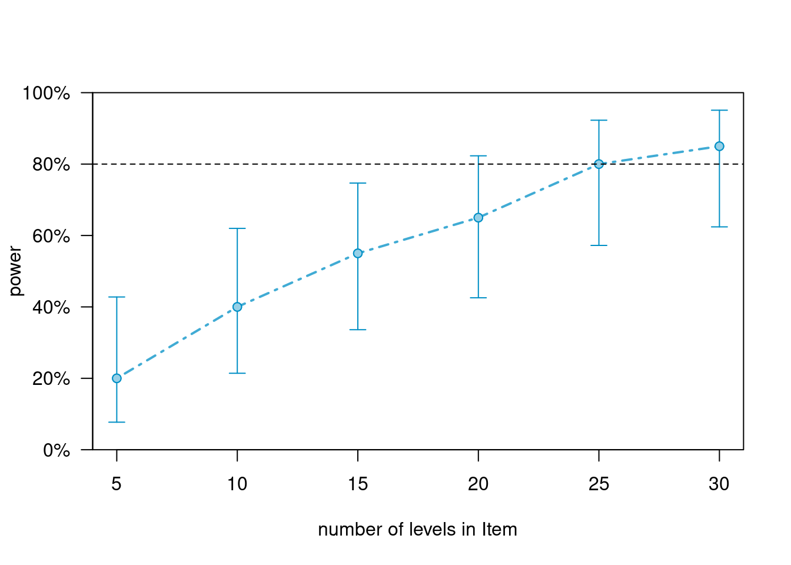
We reach the 80 percent threshold with about 25 subjects.
Resources and Links
If you want to know more, please have a look/go at the following resources:
Also check out Jacob Westfall’s website for Power Analysis with Crossed Random Effects based on Westfall, Kenny, and Judd (2014).
See Baayen et al. (2017) for power in generalized additive mixed models and why maximal models can be ill-advised. Also, see Matuscheka et al. (2017) for a simulation study on the detrimental effects of complex random effect structures on power.
Citation & Session Info
Schweinberger, Martin. 2022. Power Analysis in R. Brisbane: The University of Queensland. url: https://slcladal.github.io/pwr.html (Version 2022.09.13).
@manual{schweinberger2022pwr,
author = {Schweinberger, Martin},
title = {Power Analysis in R},
note = {https://slcladal.github.io/pwr.html},
year = {2022},
organization = "The University of Queensland, Australia. School of Languages and Cultures},
address = {Brisbane},
edition = {2022.09.13}
}sessionInfo()## R version 4.2.1 (2022-06-23)
## Platform: x86_64-pc-linux-gnu (64-bit)
## Running under: Ubuntu 22.04.1 LTS
##
## Matrix products: default
## BLAS: /usr/lib/x86_64-linux-gnu/blas/libblas.so.3.10.0
## LAPACK: /usr/lib/x86_64-linux-gnu/lapack/liblapack.so.3.10.0
##
## locale:
## [1] LC_CTYPE=en_AU.UTF-8 LC_NUMERIC=C
## [3] LC_TIME=en_AU.UTF-8 LC_COLLATE=en_AU.UTF-8
## [5] LC_MONETARY=en_AU.UTF-8 LC_MESSAGES=en_AU.UTF-8
## [7] LC_PAPER=en_AU.UTF-8 LC_NAME=C
## [9] LC_ADDRESS=C LC_TELEPHONE=C
## [11] LC_MEASUREMENT=en_AU.UTF-8 LC_IDENTIFICATION=C
##
## attached base packages:
## [1] stats graphics grDevices datasets utils methods base
##
## other attached packages:
## [1] entity_0.1.0 flextable_0.7.3 knitr_1.39 DT_0.24
## [5] effectsize_0.7.0 simr_1.0.6 sjPlot_2.8.10 lme4_1.1-30
## [9] Matrix_1.4-1 pwr_1.3-0 DescTools_0.99.45 forcats_0.5.1
## [13] stringr_1.4.0 dplyr_1.0.9 purrr_0.3.4 readr_2.1.2
## [17] tidyr_1.2.0 tibble_3.1.7 ggplot2_3.3.6 tidyverse_1.3.2
##
## loaded via a namespace (and not attached):
## [1] TH.data_1.1-1 googledrive_2.0.0 minqa_1.2.4
## [4] colorspace_2.0-3 ellipsis_0.3.2 class_7.3-20
## [7] sjlabelled_1.2.0 estimability_1.4 base64enc_0.1-3
## [10] parameters_0.18.1 fs_1.5.2 gld_2.6.5
## [13] rstudioapi_0.13 proxy_0.4-27 farver_2.1.1
## [16] fansi_1.0.3 mvtnorm_1.1-3 lubridate_1.8.0
## [19] xml2_1.3.3 codetools_0.2-18 splines_4.2.1
## [22] rootSolve_1.8.2.3 sjmisc_2.8.9 jsonlite_1.8.0
## [25] nloptr_2.0.3 ggeffects_1.1.2 pbkrtest_0.5.1
## [28] binom_1.1-1.1 broom_1.0.0 dbplyr_2.2.1
## [31] compiler_4.2.1 httr_1.4.3 sjstats_0.18.1
## [34] emmeans_1.7.5 backports_1.4.1 assertthat_0.2.1
## [37] fastmap_1.1.0 gargle_1.2.0 cli_3.3.0
## [40] htmltools_0.5.2 tools_4.2.1 coda_0.19-4
## [43] gtable_0.3.0 glue_1.6.2 lmom_2.9
## [46] Rcpp_1.0.8.3 carData_3.0-5 cellranger_1.1.0
## [49] jquerylib_0.1.4 vctrs_0.4.1 nlme_3.1-158
## [52] iterators_1.0.14 insight_0.18.0 xfun_0.31
## [55] rvest_1.0.2 lifecycle_1.0.1 pacman_0.5.1
## [58] renv_0.15.4 googlesheets4_1.0.0 klippy_0.0.0.9500
## [61] MASS_7.3-58.1 zoo_1.8-10 scales_1.2.0
## [64] hms_1.1.1 parallel_4.2.1 sandwich_3.0-2
## [67] expm_0.999-6 yaml_2.3.5 Exact_3.1
## [70] gdtools_0.2.4 sass_0.4.1 stringi_1.7.8
## [73] highr_0.9 bayestestR_0.12.1 plotrix_3.8-2
## [76] e1071_1.7-11 zip_2.2.0 boot_1.3-28
## [79] systemfonts_1.0.4 rlang_1.0.4 pkgconfig_2.0.3
## [82] evaluate_0.15 lattice_0.20-45 htmlwidgets_1.5.4
## [85] labeling_0.4.2 tidyselect_1.1.2 plyr_1.8.7
## [88] magrittr_2.0.3 R6_2.5.1 generics_0.1.3
## [91] multcomp_1.4-19 RLRsim_3.1-8 DBI_1.1.3
## [94] mgcv_1.8-40 pillar_1.7.0 haven_2.5.0
## [97] withr_2.5.0 abind_1.4-5 survival_3.4-0
## [100] datawizard_0.4.1 performance_0.9.1 car_3.1-0
## [103] modelr_0.1.8 crayon_1.5.1 uuid_1.1-0
## [106] utf8_1.2.2 officer_0.4.3 tzdb_0.3.0
## [109] rmarkdown_2.14 grid_4.2.1 readxl_1.4.0
## [112] data.table_1.14.2 reprex_2.0.1 digest_0.6.29
## [115] xtable_1.8-4 munsell_0.5.0 bslib_0.3.1References
Arnold, Benjamin F, Daniel R Hogan, John M Colford, and Alan E Hubbard. 2011. “Simulation Methods to Estimate Design Power: An Overview for Applied Research.” BMC Medical Research Methodology 11 (1): 1–10.
Baayen, Harald, Shravan Vasishth, Reinhold Kliegl, and Douglas Bates. 2017. “The Cave of Shadows: Addressing the Human Factor with Generalized Additive Mixed Models.” Journal of Memory and Language 94: 206–34.
Bolker, Benjamin M, Mollie E Brooks, Connie J Clark, Shane W Geange, John R Poulsen, M Henry H Stevens, and Jada-Simone S White. 2009. “Generalized Linear Mixed Models: A Practical Guide for Ecology and Evolution.” Trends in Ecology & Evolution 24 (3): 127–35.
Bortz, J, GA Lienert, and K Boehnke. 1990. Verteilungsfreie Methoden in Der Biostatistik. Berlin: Springer Verlag.
Brysbaert, M., and M Stevens. 2018. “Power Analysis and Effect Size in Mixed Effects Models: A Tutorial.” Journal of Cognition 1 (9): 1–20.
Champely, Stephane. 2020. Pwr: Basic Functions for Power Analysis. https://CRAN.R-project.org/package=pwr.
Chen, Henian, Patricia Cohen, and Sophie Chen. 2010. “How Big Is a Big Odds Ratio? Interpreting the Magnitudes of Odds Ratios in Epidemiological Studies.” Communications in Statistics–Simulation and Computation 39 (4): 860–64.
Cohen, Jacob. 1988. Statistical Power Analysis for the Behavioral Sciences. Hillsdale, NJ: Erlbaum.
Field, Scott A, Patrick J O’Connor, Andrew J Tyre, and Hugh P Possingham. 2007. “Making Monitoring Meaningful.” Austral Ecology 32 (5): 485–91.
Green, Peter, and Catriona J. MacLeod. 2016a. “Simr: An R Package for Power Analysis of Generalised Linear Mixed Models by Simulation.” Methods in Ecology and Evolution 7 (4): 493–98. https://doi.org/10.1111/2041-210X.12504.
Green, Peter, and Catriona J MacLeod. 2016b. “SIMR: An R Package for Power Analysis of Generalized Linear Mixed Models by Simulation.” Methods in Ecology and Evolution 7 (4): 493–98.
Gries, Stefan Th. 2005. “Null-Hypothesis Significance Testing of Word Frequencies: A Follow-up on Kilgarriff.” Corpus Linguistics and Linguistic Theory 1 (2): 277–94.
Halekoh, Ulrich, Søren Højsgaard, and others. 2014. “A Kenward-Roger Approximation and Parametric Bootstrap Methods for Tests in Linear Mixed Models–the R Package Pbkrtest.” Journal of Statistical Software 59 (9): 1–30.
Hoenig, John M, and Dennis M Heisey. 2001. “The Abuse of Power: The Pervasive Fallacy of Power Calculations for Data Analysis.” The American Statistician 55 (1): 19–24.
Johnson, Paul CD, Sarah JE Barry, Heather M Ferguson, and Pie Müller. 2015. “Power Analysis for Generalized Linear Mixed Models in Ecology and Evolution.” Methods in Ecology and Evolution 6 (2): 133–42.
Kilgarriff, Adam. 2005. “Language Is Never, Ever, Ever, Random.” Corpus Linguistics and Linguistic Theory 1 (2): 263–76.
Matuscheka, Hannes, Reinhold Kliegl, Shravan Vasishth, Harald Baayen, and Douglas Bates. 2017. “Balancing Type I Error and Power in Linear Mixed Models.” Journal of Memory and Language 94: 305–15.
Perugini, Marco, Marcello Gallucci, and Giulio Costantini. 2018. “A Practical Primer to Power Analysis for Simple Experimental Designs.” International Review of Social Psychology 31 (1): 1–23.
Westfall, Jacob, David A Kenny, and Charles M Judd. 2014. “Statistical Power and Optimal Design in Experiments in Which Samples of Participants Respond to Samples of Stimuli.” Journal of Experimental Psychology: General 143 (5): 2020–45.